freiesMagazin April 2014
(ISSN 1867-7991)
Topthemen dieser Ausgabe
Hidden in Plain Sight: Netzlaufwerke ausspähsicher nutzenDie automatische Synchronisation von Dateisystemen über das Internet vereinfacht viele Arbeitsabläufe. In Sachen Verschlüsselung muss man sich aber häufig auf die Angaben der Dienste verlassen. Dieser Artikel zeigt, wie man einen Ordner für die Verwendung mit einem Cloud-Dienst verschlüsselt und ggf. komprimiert. (weiterlesen)
Ein Blick auf Octave 3.8
Octave ist, wie der proprietäre Platzhirsch Matlab, ein umfangreiches Programmpaket, das zur Lösung numerischer Probleme genutzt werden kann. Aufgrund der vielen möglichen Erweiterungen werden diese Programme aber auch oft für weniger direkt mathematische Anwendungsfälle genutzt. (weiterlesen)
Im Test: PocketBook Touch 622
Die Welt wird immer digitaler. Auch in Deutschland erfreuen sich elektronische Lesegeräte für Bücher (E-Book-Reader genannt) immer größerer Beliebtheit. Neben dem bekannten Produkt eines großen Internet-Versandhandels gibt es auch viele andere Hersteller. In diesem Artikel soll das PocketBook Touch 622 vorgestellt werden. (weiterlesen)
Zum Index
Inhalt
Linux allgemeinDer März im Kernelrückblick
Anleitungen
Netzlaufwerke ausspähsicher nutzen
Kurztipp: Datentresor ohne TrueCrypt
Software
Ein Blick auf Octave 3.8
Neues von Redis
Äquivalente Windows-Programme unter Linux – Teil 5: Internet-Programme (1)
Ein Einstieg in LIRC mit inputlirc
Hardware
Im Test: PocketBook Touch 622
Community
PyLadies Vienna – Interview mit Floor Drees
Rezension: Linux-Kommandoreferenz
Rezension: Kanban in der IT
Rezension: Raspberry Pi programmieren mit Python
Magazin
Editorial
Leserbriefe
Veranstaltungen
Vorschau
Konventionen
Impressum
Zum Index
Editorial
freiesMagazin in Heidelberg
Jedes Jahr hält die Deutschsprachige Anwendervereinigung TeX e.V. (kurz DANTE) eine Frühjahrs- und eine Herbsttagung ab. Dieses Jahr findet die Frühjahrstagung [1] in Heidelberg vom 11. bis 14. April 2014, also nächstes Wochenende statt. Im Prinzip wäre das nichts Besonderes, wenn freiesMagazin nicht mit LaTeX gesetzt wäre und sich Chefredakteur Dominik Wagenführ jährlich dort Tipps und Tricks abholt, um das Magazin zu verbessern. In diesem Jahr hält er auch selbst wieder einen Vortrag zum Thema „Registerhaltiger Satz mit LaTeX“ [2] und zeigt, wie der Text und die Inhalte im Magazin bündig zur Grundlinie ausgerichtet werden.Typographie mit Type:Rider
Und weil wir gerade beim Thema sind: freiesMagazin nutzt LaTeX nicht aus Langeweile (auch wenn man auf die Art sehr viel Zeit mit der Optimierung des Layouts verbringen kann), sondern weil die Ausgabe optisch ansprechender als LibreOffice oder Scribus ist. Ein Teil davon sind auch die verschiedenen Schriften, die es gibt, und die Typographie [3] im Allgemeinen. Wer sich in dieser Richtung etwas weiterbilden will und auch noch gerne Computerspiele mag, wird mit dem Spiel „Type:Rider“ [4] von Ex Nihilo vielleicht glücklich. Das Spiel gibt es derzeit als Aktion im Humble Bundle [5] für Linux, MacOS X, Windows und Android zum Selbstbestimmungspreis. In Type:Rider hüpft man geschickt mit zwei Bällen durch verschiedene Level, die aber nicht aus Wiesen und Wäldern bestehen, sondern aus verschiedenen Schriften. In jedem Level gilt es alle Buchstaben der jeweiligen Schriftart einzusammeln und erhält dabei noch zahlreiche Hintergrundinformationen über den Buchdruck, die Schreibmaschine und Schriftarten jeglicher Art. Mit circa zwei bis drei Stunden Spielzeit ist es zwar kurz, aber dennoch – vor allem für Typographen – sehr reizvoll. Und nun wünschen wir Ihnen viel Spaß mit der neuen Ausgabe Ihre freiesMagazin-Redaktion Links[1] http://www.dante.de/events/dante2014.html
[2] http://www.dante.de/events/dante2014/Programm/Vortraege.html#wagenfuehr
[3] https://de.wikipedia.org/wiki/Typographie
[4] http://www.bulkypix.com/game/typerider
[5] https://www.humblebundle.com/
Das Editorial kommentieren
Zum Index
Der März im Kernelrückblick
von Mathias Menzer Basis aller Distributionen ist der Linux-Kernel, der fortwährend weiterentwickelt wird. Welche Geräte in einem halben Jahr unterstützt werden und welche Funktionen neu hinzukommen, erfährt man, wenn man den aktuellen Entwickler-Kernel im Auge behält.Entwicklung von Linux 3.14
Der März begann ruhig, mit einer Entwicklerversion [1], die unter 200 Commits kam. Eine Beruhigung stellte das jedoch noch nicht dar, denn -rc6 [2] konnte fast doppelt so viele vorweisen. Sie fielen jedoch zumeist klein aus, zumal fast ein Zehntel der geänderten Codezeilen auf die Umbenennung einer Datei aus der Dokumentation entfiel. Letztlich war der größte Teil der Patches auf Fehlerkorrekturen zurückzuführen, zu denen auch ein paar Rücknahmen vorheriger Änderungen gehörten. Linux 3.14-rc7 [3] konnte nun wirklich als Wendepunkt angesehen werden, gerade einmal 163 Commits ließen Torvalds Puls wieder ruhiger werden und ein Ende des Entwicklungszyklus in greifbare Nähe rücken. Auch die Tatsache, dass die meisten Patches als „Fix“ gekennzeichnet waren und die übrigen in eben diese Kategorie fielen, konnte diesen Eindruck wirksam unterstützen. Das Entfernen einer Optimierung für Benchmarks auf einem etwa 16 Jahre alten CPU-Typ (IDT Winchip CPU) und des ECM-Modus für USB-Netzwerkgeräte sorgten für eine leicht negative Bilanz was die Größe der Änderungen betrifft. Dass mehr Quelltext entfernt als hinzugefügt wird, kommt im Umfeld des Linux-Kernel nur selten vor. Eigentlich hatte Torvalds gehofft, auf den -rc8 [4] verzichten zu können, ließ es das dann jedoch bleiben. Auch wenn diese Version abermals schrumpfte, waren doch ein paar Änderungen dabei, die besser noch eine Woche erprobt werden sollten. Dazu gehörten einige Probleme, die mittels Trinity [5] gefunden wurden. Bei Trinity handelt es sich um ein Testwerkzeug, das mittels Fuzzing [6] Systemcalls zufällig aufruft und mit ebenfalls zufälligen Eingaben versorgt. Stürzt ein Programmteil hier ab, so weist dies darauf hin, dass ein Fehler nicht ordnungsgemäß abgefangen wurde und im Betrieb später Probleme bereiten kann. Ein paar Änderungen kamen noch zusammen, die noch Eingang in den 3.14er Kernel [7] fanden, darunter Treiber für Netzwerk-, Grafik- und Eingabegeräte. Eine weitere Änderung vereinfacht die Erkennung doppelter Adressen in IPv6-Netzen.Linux 3.14
Nach 70 Tagen Entwicklungszeit wurde Linux 3.14 veröffentlicht. Mit über 13.000 Commits zählt er zu den größeren Versionen aus der Reihe der 3er-Kernel. Auch was die Neuerungen betrifft, zählt 3.14 nicht zu den Leichtgewichten. „Deadline Scheduling“ soll die Leistung von Echtzeit-Anwendungen verbessern. Hierbei nutzt der Scheduler, der die zur Verfügung stehende Rechenzeit des Systems auf die einzelnen Prozesse verteilt, keine Prioritäten wie sonst üblich. Stattdessen führt er einzelne Prozesse innerhalb vorgegebener Intervalle für eine ebenfalls vorgegebene Zeit aus, unabhängig von der Priorität. Die Vorgaben werden durch den jeweiligen Prozess festgelegt und sollen so für eine Laufzeit sorgen, die sehr nahe am Bedarf von Echtzeit-Anwendungen liegt [8]. Eine bessere Speichernutzung soll „zram“ ermöglichen. Diese Funktion stellt Block-Geräte zur Verfügung, die den abgelegten Inhalt komprimieren. Sie kann auch als Swap-Bereich zum Auslagern von Speicherseiten aus dem Arbeitsspeicher dienen. Verschiedene Anwendungen greifen darauf bereits zurück, wie beispielsweise Android 4.4, Cyanogenmod, Chrome OS oder Lubuntu. Dies ist durchaus verzeihlich, denn zram ist nicht mehr ganz taufrisch, sondern wird bereits seit 2010 entwickelt. Es wird nun allerdings nicht mehr als experimentell eingestuft. Bereits mit Linux 3.5 wurden Uprobe eingeführt, womit einige Speicher- und Systemauswertungen für Anwendungen im Anwenderkontext ermöglicht wurden (siehe „Der Juli im Kernelrückblick“, freiesMagazin 08/2012 [9]). Dessen Funktionen wurden nun erweitert und stellt Entwicklern und Fehler-Jägern nun sehr umfangreiche Daten zur Verfügung. Auch ein weiteres, noch älteres Werkzeug zur Fehlersuche wurde überarbeitet. Der Locking Validator dient zum Aufspüren von Problemen beim Sperren von Ressourcen gegen mehrfachen Zugriff. Bislang war er nur im Superuser-Kontext nutzbar, nun ist die Verwendung auch im Userspace möglich. Der Linux-Kernel versucht mit Version 3.14 bestimmte kleine, fortlaufende Aufrufe über Netzwerk zusammenzufassen, um weniger Pakete senden zu müssen und dadurch den damit verbunden Overhead zu reduzieren. Diese Funktion, „Automatic Corking“ genannt, wurde durch die Einführung von TCP Small Queues in Linux 3.6 erst möglich (siehe „Der September und der Oktober im Kernelrückblick“, freiesMagazin 11/2012 [10]), das eigentlich als eines der Mittel zur Bekämpfung von Latenzen im Netzwerk durch Zwischenspeicherung von Netzwerkpaketen, dem Bufferbloat, erdacht wurde. Apropos: Auch „PIE“ (Proportional Integral controller Enhanced) zielt in Richtung Bufferbloat. Es handelt sich um einen neuen Paket-Scheduler, der die Latenzzeit der Netzwerkverbindung zu einer bestimmten Gegenstelle steuert. Zu PIE existiert auch ein Entwurf [11] der IETF (Internet Engineering Task Force), sodass dies auch zum Standard für die Internet-Kommunikation werden könnte. Ein vollständige Übersicht aller Änderungen ist auch diesmal wieder unter Kernelnewbies.org [12] in englischer Sprache verfügbar.AMDs Treibereien
AMD denkt scheinbar darüber nach, den Treiber für die eigenen Grafik-Chipsätze künftig auf dem radeon-Treiber basieren zu lassen [13]. Dies wäre insofern sinnvoll, da dieser bereits in Linux vorhanden ist und damit eine Kompilierung während der Installation wegfiele. Zudem tragen Entwickler von AMD sowieso bereits zum radeon-Treiber in Linux bei, deren Arbeit somit direkt auch dem offiziellen Treiberpaket zugute kommen würde. Bewahrheiten sich diese Gerüchte, die Michael Larabel während der Game Developers Conference in San Francisco aufgeschnappt hat, so könnte dieser Schritt auch den freien radeon-Treiber weiterbringen, wenn AMD eventuell mehr Entwickler-Kapazitäten bereitstellt. Links[1] https://lkml.org/lkml/2014/3/2/257
[2] https://lkml.org/lkml/2014/3/10/4
[3] https://lkml.org/lkml/2014/3/16/166
[4] https://lkml.org/lkml/2014/3/24/473
[5] http://codemonkey.org.uk/projects/trinity/
[6] https://de.wikipedia.org/wiki/Fuzzing
[7] https://lkml.org/lkml/2014/3/30/336
[8] https://de.wikipedia.org/wiki/Echtzeit
[9] http://www.freiesmagazin.de/freiesMagazin-2012-08
[10] http://www.freiesmagazin.de/freiesMagazin-2012-11
[11] http://tools.ietf.org/html/draft-pan-aqm-pie-01
[12] http://kernelnewbies.org/Linux_3.14
[13] http://www.phoronix.com/scan.php?page=article&item=amd_catalyst_kernel
| Autoreninformation |
| Mathias Menzer (Webseite) behält die Entwicklung des Linux-Kernels im Blick, um über kommende Funktionen von Linux auf dem laufenden zu bleiben und immer mit interessanten Abkürzungen und komplizierten Begriffen dienen zu können. |
Diesen Artikel kommentieren
Zum Index
Hidden in Plain Sight: Netzlaufwerke ausspähsicher nutzen
von Detlef Steuer Die automatische Synchronisation von Dateisystemen über das Internet vereinfacht viele Arbeitsabläufe. In Sachen Verschlüsselung muss man sich aber häufig auf die Angaben der Dienste verlassen. Dieser Artikel zeigt, wie man einen Ordner für die Verwendung mit einem Cloud-Dienst verschlüsselt und ggf. komprimiert. Dropbox [1] war sicherlich ein großer Sprung bei der Benutzerfreundlichkeit von Dateisystemen, die über mehrere Rechner synchron gehalten werden sollen und müssen. Tools wie unison [2] ermöglichten Ähnliches im Prinzip schon lange, sind aber unzweifelhaft schwieriger einzurichten. Den Komfort, den die automatische Synchronisation eines Laufwerks über das Netz liefert, möchte man nicht mehr missen. Mit Grausen wird sich mancher an das Hin- und Hertragen von USB-Sticks erinnern. Spätestens am Tag der Präsentation bemerkte man, dass die aktuelle Version unerreichbar auf dem Rechner, der warm und trocken zu Hause steht, ruht. Mittlerweile gibt es viele Alternativen für oft auch kostenlosen Netzwerkspeicher. Allen gemeinsam ist aber, dass irgendwo ein Admin sitzt, den man nicht kennt. Angeblich werden die Daten bei manchen Diensten verschlüsselt abgelegt, jedoch ist es in der Regel nicht möglich, dies zu überprüfen. Selbst wenn man die eigene Owncloud [3] z. B. auf einem Virtual Server ablegt, ist kaum zu verifizieren, was dem Admin des Dienstleisters möglich ist und was nicht. Vielen war deshalb die Cloud [4] von Anfang an suspekt, jedoch wog der Komfort die Sorge auf. Wer interessiert sich schon für meine Daten? Heute weiß man es besser. Es wäre also schön, wenn es ein Tool gäbe, das die Weiternutzung eines Netzwerkspeichers ermöglicht, die aber einem neugierigen Beobachter keine weiteren Informationen liefert, als dass überhaupt Daten vorhanden sind. Die folgende Anleitung ermöglicht die Einrichtung eines verschlüsselten und optional komprimierten Ordners, ab jetzt $SAFE genannt, auf einem beliebigen Netzlaufwerk (owncloud, dropbox, boxfs, sshfs, davfs, cifs, NFS etc.). Dem Administrator des jeweiligen Netzlaufwerks muss nicht vertraut werden. Er kann nicht mehr erkennen, als die Zahl der Dateien und natürlich Änderungszeitpunkte der Dateien. Soweit bekannt, ist ein Ausspähen der Inhalte momentan unmöglich. Bei physischem Zugriff auf den lokalen Rechner und Diebstahl des Passworts für die Verschlüsselung bekommt ein Angreifer natürlich auch den Zugriff auf die entfernten, verschlüsselten Daten. Auf die Sicherung der lokalen Maschine gegen Fremdzugriffe wird im Rahmen dieses Artikels aber nicht eingegangen. Das hier vorgestellte Mittel der Wahl für sichere Netzwerklaufwerke ist FUSE [5], das Kernelmodul für ein „filesystem in userspace“. Durch geschicktes Hintereinanderschachteln von zwei Dateisystemen für dieses Framework, nämlich encfs [6] und fusecompress [7] kann ohne großen Komfortverlust jeder Netzwerkspeicher ausspähsicher genutzt werden.Die Ausgangssituation
Der Benutzer hat ein Netzwerklaufwerk unter $NETZPFAD, z. B. ~/owncloud, eingehängt. Der komplette Dateibaum unterhalb von $NETZPFAD/ wird automatisch über das Netz synchronisiert. Selbstverständlich lässt sich diese Anleitung auch nutzen, um z. B. ein verschlüsseltes Backup auf einer externen Platte anzulegen oder einen Teil des lokalen Dateibaums auch für den lokalen Administrator zumindest dann unlesbar zu machen, wenn man selbst aktuell nicht angemeldet ist, der Fokus liegt aber auf der Arbeit im Netz. Am besten werden die genannten Pakete fuse (filesystem in userspace), encfs (encrypted filesystem) und fusecompress (fuse + compress) über den Paketmanager der jeweiligen Distribution installiert. Eine Bemerkung ist zu fusecompress nötig: Dieses Paket ist in zwei Zweigen im Netz zu finden. Einmal in Version 0.9x und einmal in Version 1.9x. Die funktionierende Version ist überraschend die Version 0.9x, da der ursprüngliche Autor anscheinend irgendwann die Lust verloren hat, die 1.9x zu debuggen. Bei manchen Distributionen muss der Benutzer noch der Nutzergruppe fuse hinzugefügt werden, bevor er fuse nutzen kann. Weniger überraschend liefert encfs den Layer, der die Verschlüsselung übernimmt, und fusecompress den Layer, der die Kompression übernimmt. Beim Zusammenspiel ist darauf zu achten, dass zunächst komprimiert, dann verschlüsselt wird. encfs verzichtet im Gegensatz zu vielen anderen Verschlüsselungskonzepten auf eine vorgeschaltete Kompression. In den Standardeinstellungen könnte ein übel gesonnener Admin so als zusätzliche Information die Dateigröße jeder Datei sehr genau ablesen. Eine vorangestellte Kompression verhindert dies offensichtlich. Würde man die Reihenfolge ändern, so sollte die Kompression praktisch ohne Effekt bleiben, denn bereits verschlüsselte Daten sollten prinzipiell schlecht zu komprimieren sein. Da es in dieser Anleitung insbesondere um Netzlaufwerke geht, ist der Lese-/Schreibzugriff auf das Netzlaufwerk der engste Flaschenhals, so dass die Kompression trotz erhöhter CPU-Last den Durchsatz erhöhen kann. Für lokale Laufwerke kann eine andere Parameterwahl sinnvoll sein. Wenn man auf die Daten auch vom Smartphone zugreifen möchte, empfiehlt es sich, auf die Kompression zu verzichten. Für Android gibt es zwar Apps, die auf encfs-verschlüsselte Verzeichnisse zugreifen können, soweit bekannt ist aber kein Zugriff auf komprimierte Verzeichnisse möglich. Ähnliches gilt auch, wenn ein verschlüsseltes Verzeichnis von anderen Betriebssystemen aus genutzt werden soll. encfs gibt es auch für Windows und MacOS. Nach meinem Wissen ist aber das Hintereinanderschalten der Werkzeuge nicht so möglich wie unter Linux.Vorarbeiten
Am Anfang steht das Backup. Wer die einzige Kopie seiner lebenswichtigen Daten zum Ausprobieren nutzt, soll sich bitte hinterher nicht wundern! Natürlich müssen einige Vorüberlegungen angestellt werden, um möglichst einfach mit diesen Werkzeugen sein Ziel zu erreichen. Das Dateisystem muss die passenden Einhängepunkte enthalten und die Verschlüsselung muss zunächst einmal initialisiert werden. Die Kompression kann mit einigen Parametern auf die persönliche Anwendung eingestellt werden.Filesystem Layout
Um die Dateisysteme wie gewünscht zu nutzen, sind drei Verzeichnisse nötig: $PLAIN, $COMPRESSED und $SAFE. Von diesen drei Verzeichnissen soll lediglich $SAFE auf dem Netzlaufwerk liegen. Dieses Verzeichnis wird synchronisiert und dort landen die komprimierten und verschlüsselten Daten, die jeder gern sehen darf. Wenn sich der Benutzer abgemeldet hat und die Dateisysteme ausgehängt sind, enthält lediglich das Verzeichnis $SAFE Daten! Die beiden anderen Verzeichnisse beinhalten nur intermediäre Daten, die nur solange Gültigkeit behalten, wie die Verzeichnisse eingehängt sind. $PLAIN ist das Verzeichnis, aus dem gelesen und in das geschrieben werden kann, wenn die Verzeichnisse gemountet sind. Ein sinnvoller Ort im Dateisystem kann zum Beispiel ~/Dokumente/Klartext sein. Für den Benutzer sieht es während der Arbeit exakt so aus, wie jedes andere Verzeichnis. Sowohl Kompression als auch Verschlüsselung geschehen im Betrieb komplett transparent. Solange die verschlüsselten Verzeichnisse nicht eingehängt werden, ist $PLAIN ein gewöhnliches leeres Verzeichnis. $COMPRESSED ist das Verzeichnis, in das von fusecompress automatisch komprimierte Kopien der Dateien aus $PLAIN angelegt werden. Zugleich nimmt dann encfs diesen Ordner als Ausgangsordner der Kompression. Eine vernünftige Lösung ist, $COMPRESSED als versteckten Ordner in $HOME, z. B. ~/.compressed_files, anzulegen, da mit den Dateien dort nicht interaktiv gearbeitet wird. Alle Dateien in $COMPRESSED werden transparent nach $NETZPFAD/$SAFE verschlüsselt. Ein typisches Setup mit dem Netzordner ~/owncloud könnte somit wie folgt aussehen:$ $NETZPFAD=~/owncloud
$ $PLAIN=~/Dokumente/Klartext
$ $COMPRESSED=~/.compressed_files
$ $SAFE=$NETZPFAD/Kauderwelsch
$ mkdir $PLAIN $COMPRESSED $SAFE
Es ist wichtig, dass die Pfade als absolute Pfade angegeben werden,
ansonsten verweigern fuse-Dateisysteme den Dienst.
$ $PLAIN=~/Dokumente/Klartext
$ $COMPRESSED=~/.compressed_files
$ $SAFE=$NETZPFAD/Kauderwelsch
$ mkdir $PLAIN $COMPRESSED $SAFE
Initialisierung der Verschlüsselung
Im nächsten Schritt muss die Verschlüsselung eingerichtet werden:$ encfs $SAFE $COMPRESSED
encfs konfrontiert den Nutzer nun mit der Wahl der
Verschlüsselungsparameter.
Sinnvollerweise, wenn man nicht tief in den aktuellen Entwicklungen
der Kryptotools steckt, wählt man hier p und verlässt sich auf
die Voreinstellungen der Entwickler für den sogenannten Paranoia-Modus.
Welche Parameter hiermit im Detail gewählt sind, teilt encfs nun
freundlicherweise mit und fragt nach einem Passwort für das
verschlüsselte Dateisystem.
Der Hinweis in der Ausgabe von encfs ist ernst zu nehmen: Niemand wird
Zugriff auf Daten bekommen, wenn das Passwort vergessen wurde. Das ist ja
schließlich Sinn und Zweck der Veranstaltung… Wie üblich fragt
encfs noch einmal nach dem Passwort, um Vertipper abzufangen.
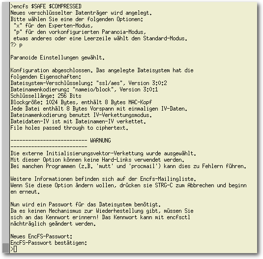Bei der Einrichtung der Verschlüsselung wählt man sinnvollerweise den voreingestellten Paranoia-Modus.
Je nach Rechner und aktueller Last entsteht an dieser Stelle eine mehrsekündige Pause, in der encfs die Verschlüsselung initialisiert. Eine relativ häufige Situation, in der die Standardoptionen nicht ausreichen, ist das Anlegen auf einem Dateisystem, das nicht sensitiv gegenüber Groß- und Kleinschreibung ist. Der Lesetipp im Fazit diskutiert diesen Fall. Hat alles geklappt, enthält ein Aufruf von mount nun eine Zeile für das neue, verschlüsselte Verzeichnis:
$ mount
encfs on $COMPRESSED type fuse.encfs (rw,nosuid,nodev,relatime,user_id=1000,group_id=100,default_permissions)
Schaut man in das Verzeichnis $SAFE, so befindet sich
dort die versteckte Datei .encfs6.xml, welche unter anderem den
Hashwert des gewählten Passworts enthält. Soweit bekannt reicht dies
nicht für einen Angriff auf den Klartext der Dateien. Wer will,
der kann diese Datei aber auch in einem anderen
Verzeichnis außerhalb der Cloud ablegen. Sie muss dann natürlich über
einen anderen Kanal auf allen Rechnern verfügbar gemacht werden, die
auf $SAFE zugreifen sollen.
In diesem Tutorium bleibt sie, wo sie ist, und liegt auf
dem Netzlaufwerk, ist also vom Cloud-Admin potenziell lesbar.
Welche Attacken auf die verschlüsselten Daten im Detail durch encfs verhindert
werden, diskutiert dessen Manpage ausführlich.
encfs on $COMPRESSED type fuse.encfs (rw,nosuid,nodev,relatime,user_id=1000,group_id=100,default_permissions)
Einhängen des verschlüsselten Verzeichnisses
Bei späteren Aufrufen muss man das Passwort jeweils an der Kommandozeile eingeben, wenn man den Mountbefehlencfs $SAFE $COMPRESSED
aufruft. Um mittels Skripten diesen Prozess zu automatisieren, kann man encfs
auch das Passwort übergeben. Der Aufruf lautet dann z. B.
$ echo "GeheimesPasswort" | encfs -S $SAFE $COMPRESSED
Hier kommt zum Tragen, was weiter oben erwähnt wurde. Wenn man den
Komfort und die kleinere Fehlerwahrscheinlichkeit bei Nutzung eines
Skripts in Anspruch nimmt, wird der Zugriff auf die lokale Maschine
gleichzeitig den Zugriff auf die entfernten Daten erlauben. Hier muss
jeder selbst abwägen, welches Szenario ihm bei der Sicherung der Daten
vorschwebt.
Kompressionseinstellung
Mittels der Eingabe von$ fusecompress $COMPRESSED $PLAIN
wird nun auch noch die Kompression mit den Standardeinstellungen von
fusecompress in Betrieb genommen. Die Standardeinstellungen sind in vielen Fällen
bereits gut genug. Wenn allerdings auf ein langsames Medium zugegriffen wird - und
jedes Netzlaufwerk ist ein langsames Medium - dann kann es sich in höherer
Arbeitsgeschwindigkeit auszahlen, wenn man eine stärkere Kompression wählt.
Eine stärkere Kompression um den Preis von erhöhter CPU-Last erhält man mit
einem Einbinden mittels des alternativen Kommandos
$ fusecompress -c lzma -l 4 $COMPRESSED $PLAIN
Wie man sieht, setzt -c den Kompressionsalgorithmus und -l
die Kompressionsstufe. Höhere Stufen als vier für lzma zu wählen,
senkt die Arbeitsgeschwindigkeit meist zu stark, um noch insgesamt zu
profitieren.
Nutzung auf der ersten Maschine
Nachdem die Vorarbeiten abgeschlossen sind, kann man anfangen den $SAFE zu nutzen! Ein Aufruf vonmount
sollte Zeilen ähnlich den
folgenden enthalten (natürlich mit den Pfaden anstelle der Variablen):
$ mount
encfs on $SAFE type fuse.encfs (rw,nosuid,nodev,relatime,user_id=1000,group_id=100,default_permissions)
fusecompress on $PLAIN type fuse.fusecompress (rw,nosuid,nodev,relatime,user_id=1000,group_id=100,default_permissions)
Die Verzeichnisse sind leer bis auf eine Konfigurationsdatei, wie leicht zu
überprüfen ist:
encfs on $SAFE type fuse.encfs (rw,nosuid,nodev,relatime,user_id=1000,group_id=100,default_permissions)
fusecompress on $PLAIN type fuse.fusecompress (rw,nosuid,nodev,relatime,user_id=1000,group_id=100,default_permissions)
$ ls -laR $PLAIN $COMPRESSED $SAFE
Im Verzeichnis $PLAIN kann man nun ganz normal arbeiten, z. B. den
berühmten Essay von RMS [8] herunterladen:
$ cd $PLAIN
$ wget http://www.gnu.org/philosophy/right-to-read.html
Das Dateisystem sieht dann aus wie folgt.
In $PLAIN liegt das Original wie heruntergeladen:
$ wget http://www.gnu.org/philosophy/right-to-read.html
28042 30. Jan 17:48 right-to-read.html
In $COMPRESSED eine komprimierte Kopie:
15685 30. Jan 17:48 right-to-read.html
In $SAFE die komprimierte Kopie zusätzlich verschlüsselt:
1090 30. Jan 16:56 .encfs6.xml
15821 30. Jan 17:48 pL6Oqj-9lY9uDSmuSuyenzNQ2EetcrSJ1,Xnkzhe-4R9V1
Ein Angreifer in der Cloud sieht diese letzte Datei. Er wird daraus keine
Schlüsse außer dem ziehen können, dass eine Verschlüsselung genutzt wird.
15821 30. Jan 17:48 pL6Oqj-9lY9uDSmuSuyenzNQ2EetcrSJ1,Xnkzhe-4R9V1
Aushängen der Verzeichnisse
Ist man fertig mit der Arbeit, kann man die Verzeichnisse mit$ fusermount -u $PLAIN
$ fusermount -u $COMPRESSED
wieder aushängen. Die Reihenfolge ist natürlich wichtig!
Man sollte es auch nicht vergessen, denn sonst sind ja noch lesbare
Versionen der Dateien im System.
Schaut man nach dem Aushängen ein weiteres Mal in die Verzeichnisse, so
sieht man, dass $PLAIN und $COMPRESSED leer sind und nur $SAFE
eine verschlüsselte Kopie der Datei enthält.
$ fusermount -u $COMPRESSED
Zugriff von einer anderen Maschine
Auf weiteren Maschinen kann man nun exakt so vorgehen wie auf dem Hauptrechner, um auch von dort den $SAFE zu nutzen. Es müssen Verzeichnisse für $PLAIN und $COMPRESSED auf der jeweiligen Maschine angelegt werden, die konkreten Namen dürfen natürlich abweichen, $SAFE muss auf den entsprechenden Ordner auf dem Netzlaufwerk gerichtet werden und schon kann man mit den identischen Befehlen$ encfs $SAFE $COMPRESSED
$ fusecompress $COMPRESSED $PLAIN
den Netzwerkordner auf einem Remoterechner ebenfalls lesen.
Hat man die Parameter für fusecompress abweichend vom Standard
gewählt, sind diese natürlich passend anzugeben.
Sinnvollerweise erstellt man sich kleine Skripte, um das Ein- und
Aushängen zu automatisieren und Benutzerfehler zu vermeiden.
$ fusecompress $COMPRESSED $PLAIN
Fazit und Leseempfehlungen
Mit dem FUSE-Framework und den beiden Dateisystemen encfs und fusecompress lässt sich leicht ein ausspähsicheres Netzlaufwerk einrichten. Sinnvollerweise automatisiert man das Ein- und Aushängen mit kleinen Skripten. Es ist mittels des Pakets libpam-encfs [9] auch möglich, die verschlüsselten Verzeichnisse gleich bei der Anmeldung einzuhängen. Im Netz findet sich auch ein weit umfangreicheres Tutorial [10] für encfs. Folgt man dieser Anleitung, kann endlich wieder ohne schlechtes Gefühl der Komfort genutzt werden, den die modernen Netzwerkdienste bieten. Ein potenzieller Angreifer kann die Dateien nun zwar noch sehen, aber nichts mehr aus ihnen erkennen. Sie sind „hidden in plain sight“. Links[1] https://www.dropbox.com/
[2] http://www.cis.upenn.edu/~bcpierce/unison/
[3] http://www.owncloud.org
[4] https://de.wikipedia.org/wiki/Cloud-Computing
[5] http://fuse.sourceforge.net/
[6] http://www.arg0.net/encfs
[7] https://code.google.com/p/fusecompress/
[8] https://de.wikipedia.org/wiki/Richard_Stallman
[9] https://code.google.com/p/pam-encfs/
[10] http://www.ict.griffith.edu.au/anthony/info/crypto/encfs.hints
| Autoreninformation |
| Detlef Steuer ist promovierter Statistiker und nutzt Linux seit der grauen Vorzeit. Die erste Kernelversion auf einem eigenen Rechner war 0.96a4. Zur Zeit arbeitet er an der Helmut-Schmidt-Universität Hamburg. |
Diesen Artikel kommentieren
Zum Index
Kurztipp: Heimcontainer oder Datentresor ohne TrueCrypt
von Bodo P. Schmitz Auch wenn TrueCrypt derzeit wohl als vertrauenswürdig gelten darf [1], so bietet es sich an, eine Verschlüsselung mit Bordmitteln umzusetzen, um Passwörter, Zugangsdaten oder sonstige Daten sicher aufzubewahren und zu transportieren. Ein möglicher Weg wäre das dateibasierte EncFS. Eine leicht zu „transportierende“ Möglichkeit ohne dessen Nachteile einer ordnerbasierten Verschlüsselung bietet sich mit dm-crypt an, da dieses nicht nur Partitionen, sondern auch Container-Dateien verschlüsseln kann – allerdings benötigt man dazu root-Rechte! Zunächst erzeugt man einen Container von z. B. 10MB Größe.# dd if=/dev/zero bs=10M count=1 of=/Pfad/zu/container.crypt
Da dm-crypt nicht das Konzept der
„Glaubhaften Abstreitbarkeit“ [2]
unterstützt, bietet sich alternativ die Wahl eines unverfänglichen Namens wie
z. B. urlaub.jpg an.
Der Container wird dann verschlüsselt:
# cryptsetup luksFormat -c aes-xts-plain64 -s 512 /Pfad/zu/container.crypt
Wie üblich muss die folgende Frage mit großgeschriebenem YES quittiert werden.
Danach folgt zur Sicherheit die doppelte Eingabe der Passphrase.
Dann wird der Container geöffnet:
# cryptsetup luksOpen /Pfad/zu/container.crypt crypt
Anschließend wird der Container mit einem Dateisystem formatiert:
# mkfs.ext4 /dev/mapper/crypt
Es muss natürlich ein Mountpunkt für den Container existieren – diesen ggf.
vorher mit
# mkdir /media/crypt
anlegen. Damit der nicht-privilegierte Benutzer auf den Container zugreifen kann,
sind noch die Zugriffsrechte entsprechend anzupassen:
# chown Name:Gruppe /media/crypt/
Die User-ID (uid) und Group-ID (gid) können mit dem Befehl
id abgefragt werden. Der Container kann danach eingebunden werden:
# mount /dev/mapper/crypt /media/crypt
Anschließend kann der Container (auch als nicht-privilegierter Benutzer)
beschrieben werden.
Ausgehängt wird er mit:
# umount /media/crypt/
Abschließend wird der Container geschlossen:
# cryptsetup luksClose crypt
Ein Vorteil dieser Methode ist, dass die verschlüsselte Containerdatei
container.crypt bequem und sicher selbst über einen unverschlüsselten USB-Stick
oder das unsichere Internet auf andere Computer übertragen werden kann –
vorausgesetzt, die eingesetzten Rechner können mit dm-crypt und dem Dateisystem
des verschlüsselten Containers umgehen.
Links[1] http://heise.de/-2035104
[2] https://de.wikipedia.org/wiki/Glaubhafte_Abstreitbarkeit
| Autoreninformation |
| Bodo P. Schmitz (Webseite) hat in den letzten zehn Jahren rund 200 Installationen verschiedener Distributionen durchgeführt. |
Diesen Artikel kommentieren
Zum Index
Ein Blick auf Octave 3.8
von Jens Dörpinghaus Octave [1] ist, wie der proprietäre Platzhirsch Matlab [2], ein umfangreiches Programmpaket, das zur Lösung numerischer Probleme genutzt werden kann. Aufgrund der vielen möglichen Erweiterungen werden diese Programme aber auch oft für weniger direkt mathematische Anwendungsfälle genutzt. Dabei kann sowohl Matlab als auch Octave zum einen mehr oder weniger interaktiv, durch eine Art Kommandozeile oder durch Elemente mit grafischer Oberfläche genutzt werden. Zum anderen kann in einer an die normale mathematische Notation angelehnten Sprache auch programmiert werden. Ursprünglich waren beide Programme zur Lösung von mathematischen Problemen der Numerik in matrix- oder vektororientierter Schreibweise gedacht, haben sich aber inzwischen – nicht zuletzt durch die große Anzahl an Erweiterungen – zu Rundumlösungen für technisch-wissenschaftliche bis statistische Probleme gemausert. So erklärt sich die große Verbreitung an Universitäten, Hochschulen und in der Forschung. Zu Matlab ist Octave weitestgehend kompatibel, allerdings gibt es bis zur zukünftigen Version 4.0 keine eigene grafische Benutzeroberfläche. Da dies von vielen Nutzern als besonders wichtiger Punkt betrachtet wird, wurde mit deren Entwicklung begonnen. In der Ende letzten Jahres erschienenen Version 3.8.0 gibt es nun optional eine – noch nicht ganz fertige – Version dieser Oberfläche. Nachdem kurz die Installation der neuen Version skizziert wird, soll die neue Oberfläche zusammen mit anderen Neuerungen vorgestellt werden. Danach gibt es noch ein paar Vergleiche mit Matlab, die insbesondere im wissenschaftlichen Umfeld interessant sein können: wie beide mit Toolboxen und Erweiterungen umgehen, wie parallele Programmieransätze implementiert werden können und weitere Aspekte, die sich auf die Ausführungsgeschwindigkeit auswirken.Installation
Ist die aktuelle Version von Octave nicht in der Paketverwaltung der jeweiligen Distribution vorhanden, so kann sie sehr einfach von Hand kompiliert werden. Für Debian, RedHat-basierende und einige andere Distributionen finden sich die zu installierenden Pakete im Octave-Wiki [3]. Die Installation in der Konsole läuft im Wesentlichen mit diesen Schritten ab: Zunächst muss der aktuelle Quellcode vom FTP-Server [4] heruntergeladen werden. Alternativ kann man auch wget benutzen (hier beispielhaft an der aktuellen Version 3.8.0):$ wget ftp://ftp.gnu.org/gnu/octave/octave-3.8.0.tar.gz
Anschließend wird diese Datei entpackt und in das entpackte Verzeichnis gewechselt
$ tar -xzf octave-3.8.0.tar.gz
$ cd octave-3.8.0
Nun kann ./configure aufgerufen werden. Sollen alle Schritte als Benutzer
ohne Administrationsrechte ausgeführt werden, kann mit
$ cd octave-3.8.0
$ ./configure --prefix=~/octave
das Installationsverzeichnis, hier als Beispiel ~/octave übergeben werden.
Nun sollte man auf die Ausgabe achten, denn am Ende wird eine Liste von für
bestimmte Anwendungsteile fehlenden Abhängigkeiten geliefert. Viele sind
eventuell nicht relevant, aber eine komplett fehlende GUI oder ein fehlender
Editor würden sofort auffallen. Ein Fehlen der Qscintilla-Entwicklungspakete
würde beispielsweise mit
configure: WARNING: Qscintilla library not found -- disabling built-in GUI editor
ausgegeben werden. Abzuschließen ist die Installation mit
$ make
$ make install
Den letzten Befehl muss man mit Root-Rechten nutzen, wenn man nicht ins
eigene Benutzerverzeichnis installiert.
Ein bisschen Geduld muss man dabei mitbringen.
Lief aber alles fehlerlos
durch, kann als normaler Nutzer die neue grafische Oberfläche mit
$ make install
$ octace --force-gui
gestartet werden.
Neuerungen
Beim ersten Start bekommt man noch eine schöne große Warnmeldung, dass es sich um eine experimentelle GUI handelt, vorgesetzt. Die neue Oberfläche von Octave wirkt sonst sehr aufgeräumt und schlicht. Alle wichtigen – und aus Matlab bekannten – Dinge stehen zur Verfügung: ein Dateibrowser, die Befehlshistorie und die Arbeitsumgebung. Matlab-Nutzer vermissen u. U. aber die Farbigkeit und Weite der Matlab-GUI. 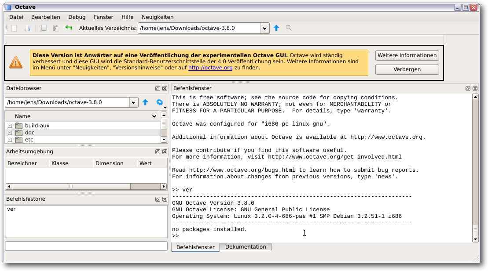Octave beim ersten Start.
Auch wenn Octave von Haus aus die Möglichkeit gibt, die Dateien mit einem externen Editor zu bearbeiten, so macht der Editor doch schon einen soliden Eindruck. Was allerdings sehr verwirrt, ist die Tatsache, dass er eine eigene Tableiste am oberen Rand mitbringt – was schon die zweite Tableiste ist. 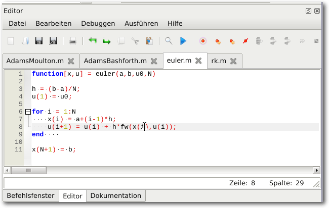
Der neue Editor der Octave-GUI.
In den vorherigen Versionen benutzte Octave noch gnuplot [5] für Grafiken, nun wird standardmäßig OpenGL verwendet. gnuplot steht aber immer noch optional zur Verfügung. 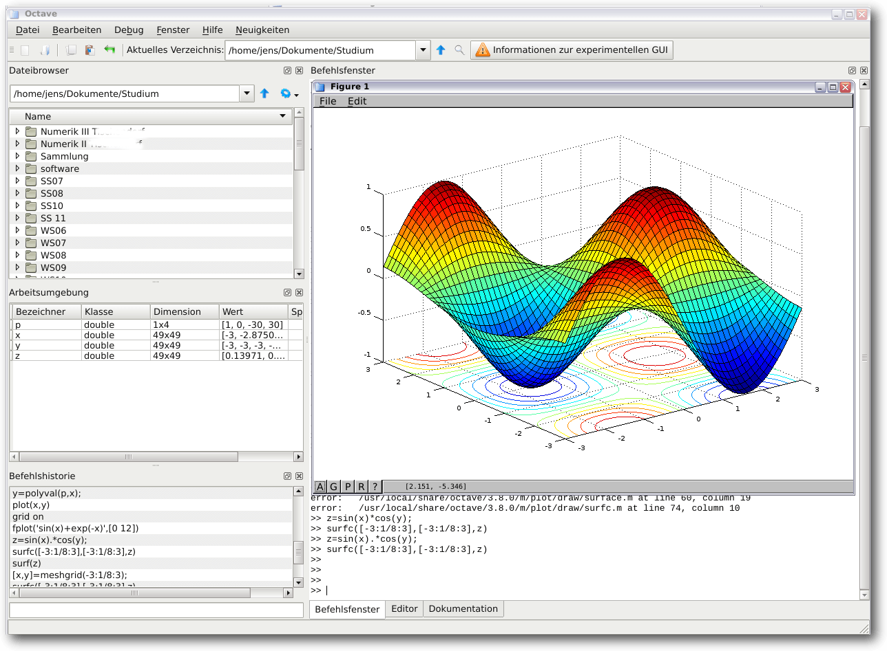
Ein Funktionsgraph mit OpenGL.
Weitere Neuerungen sind neben vielen internen Änderungen und Bugfixes auch eine größere Matlab-Kompatibilität, Exceptions mit Namen und ein TeX-Interpreter. Außerdem ist das Java-Paket, das es erlaubt, Java-Klassen direkt aus Octave anzusprechen, nun Bestandteil von Octave.
JIT-Compiler und Compiler: Ausführungsgeschwindigkeit
Matlab hat einen eingebauten JIT-Compiler (Just-In-Time [6]), der in manchen Fällen zu einer signifikant höheren Geschwindigkeit führt. Dabei wird Quellcode zur Laufzeit in Maschinencode übersetzt. Octave kann in solchen Fällen nur durch eine geschickte vektororientierte Programmierung beschleunigt werden. Ein JIT-Compiler ist allerdings experimentell schon vorhanden und kann getestet werden [7]. Wie groß im Extremfall der Geschwindigkeitsverlust sein kann, wird in einem Blogbeitrag aus dem Jahre 2011 beschrieben [8]. Ein Manko in Octave ist auch der fehlende Compiler, um ausführbare Dateien zu erstellen. Oft wird dieser genutzt, um Matlab-Programme entweder zu verteilen oder parallel auszuführen, was sonst eine große Anzahl an Lizenzen kosten würde. In beiden Fällen kann aber, sofern die Geschwindigkeit passt, getrost auf das Kompilieren verzichtet werden – denn Octave ist eben freie Software.Erweiterungen und Toolboxen
Von Matlab kennt man den Begriff der „Toolbox“, der sich primär auf optionale, oft sehr kostenintensive Erweiterungen von Mathworks selber bezieht. Der Begriff wurde aber auch auf weitere, teils freie Erweiterungen wie die Psychophysics-Toolbox [9] übertragen. Unter Octave werden solche Erweiterungen als „Package“ bezeichnet und stehen reichlich zur Verfügung. Nicht für alle Toolboxen stehen unter Octave gleichwertige Packages zur Verfügung, als Beispiel sei zum einen die Signal-Processing-Toolbox genannt, deren Äquivalent, dem Signal-Package, einige Funktionen fehlen, und zum anderen die Curve-Fitting-Toolbox, die in der Octave-Welt völlig fehlt. Inwieweit die fehlenden Funktionen relevant sind bzw. etwaige Inkompatibilitäten wichtig sind, muss im Einzelfall geprüft werden. Die Installation erfolgt in Matlab in aller Regel über ein Installationsprogramm (Toolboxen von Mathwork) oder durch simples Entpacken und Hinzufügen zu den Pfaddefinitionen. Letzteres funktioniert unter Octave auch, allerdings gibt es einen wesentlich komfortableren Weg Erweiterungen zu installieren, denn Octave besitzt ein komplettes „package system“. Dieses funktioniert ganz ähnlich wie in der Statistiksoftware R, kann einfach auf der Kommandozeile aufgerufen werden und bezieht – zumindest bei den Paketen, die in Octave-Forge [10] vorhanden sind – die Daten automatisch.Parallele Programmierung
Eines der Bereiche, in denen Matlab in den letzten Jahren enorme Vereinfachungen gebracht hat, ist der der parallelen Programmierung. Dabei kann grundsätzlich zwischen Shared Memory (also z. B. das Nutzen von mehreren CPUs auf einem Rechner) und Distributed Memory (etwa in einem Cluster) unterschieden werden. Beides kann in Matlab mit demselben Quellcode programmiert werden, man nutzt dazu entweder ein lokales Profil (mit maximal 12 CPUs) oder ein Profil, dass einen Distributed Computing Server anspricht. Für letzteres sind nicht gerade preiswerte Lizenzen zusätzlich zu erwerben. Matlab bietet spezielle parallele Blöcke, etwa beispielsweise parfor für eine parallel auszuführende for-Schleife und führt einige Funktionen automatisch parallel aus. Dieser Weg bleibt den Octave-Nutzern verschlossen. Allerdings gibt es mit Paketen aus Octave-Forge die Möglichkeit MPI zu benutzen oder Funktionen auf mehreren Prozessoren mit der Funktion parcellfun lokal auszuführen [11]. Eine der wohl gängigsten Arten der Parallelisierung ist das simple parallele Ausführen derselben Anwendung, etwa wenn verschiedene Auswertungen auf unterschiedlichen Daten laufen müssen. Hier kann Matlab genauso wie Octave ohne GUI ausgeführt werden, wobei bei Matlab für jede Instanz wieder eine Lizenz vorhanden sein muss.Fazit
Mit der neuen GUI macht Octave sicherlich vielen Menschen den Umstieg leichter, die bisher Matlab die Treue gehalten haben, aber z. B. wegen der Lizenzpolitik von Mathworks nach Alternativen suchen. Octave ist anders als Matlab und eine Umstellung ist in beide Richtungen nötig. Einige Anwender werden sicherlich diverse Toolboxen vermissen, aber für die allermeisten Anwendungsfälle ist Octave eine mehr als ausreichende Alternative. Für diejenigen, die Octave sowieso schon seit vielen Jahren nutzen, gibt es nun eine aufgeräumte grafische Oberfläche, die einem das Arbeiten versüßt. Links[1] https://www.gnu.org/software/octave/
[2] http://www.mathworks.com/products/matlab/
[3] http://wiki.octave.org/Octave_for_GNU/Linux
[4] ftp://ftp.gnu.org/gnu/octave/
[5] http://www.gnuplot.info/
[6] https://de.wikipedia.org/wiki/Just-in-time-Kompilierung
[7] http://www.gnu.org/software/octave/doc/interpreter/JIT-Compiler.html
[8] http://thatcadguy.blogspot.de/2011/01/mathworks-matlab-vs-gnu-octave.html
[9] http://psychtoolbox.org/
[10] http://octave.sourceforge.net/
[11] http://octave.sourceforge.net/parallel/
| Autoreninformation |
| Jens Dörpinghaus arbeitet seit vielen Jahren mit Matlab und Octave. Da er privat ausschließlich freie Software einsetzt, verfolgt er die Entwicklung von Octave gespannt. |
Diesen Artikel kommentieren
Zum Index
Neues von Redis
von Jochen Schnelle In freiesMagazin 09/2012 [1] gab es einen ausführlichen Artikel über Redis, ein performantes Key-Value-Store. Behandelt wurde dort die damals aktuelle Version 2.4.15. Inzwischen ist Redis bei Version 2.8 angekommen. Dieser Artikel beschreibt einige Neuerungen der Versionen 2.6 und 2.8 Inhaltlich ist der in der Einleitung genannten Artikel immer noch gültig, in den neueren Versionen wurden „nur“ Ergänzungen und Erweiterungen vorgenommen. Auch die Installation funktioniert noch genauso wie seinerzeit beschrieben. Hinweis: Dieser Artikel wurde auf Basis von Redis 2.8.5 geschrieben. Der Redis-Prompt in diesem Artikel ist 127.0.0.1:6379> und muss nicht eingegeben werdenNeuer Befehl: SCAN
Mit SCAN (und den eng verwandten Befehlen HSCAN, SSCAN und ZSCAN) kann Redis ab Version 2.8 über Schlüssel bzw. Hashes, Sets und Sorted Sets iterieren. Zurückgeliefert wird dann ein Teil oder – bei kurzen Datensätzen – alle Daten. Dazu ein Beispiel für Sets. Zuerst wird ein Set namens testset angelegt und dann darüber iteriert:127.0.0.1:6379> SADD testset foo bar spam egg
(integer) 4
127.0.0.1:6379> SSCAN testset 0
1) "0"
2) 1) "egg"
2) "bar"
3) "foo"
4) "spam"
Die 0 am Ende des Befehlsaufrufs von SSCAN dient zur Definition des
Startpunkts. Bei der ersten Iteration muss hier eine Null angegeben werden.
Da das Set sehr kurz ist, werden alle Daten auf einmal zurückgeliefert. Die
Ausgabe 1) "0" signalisiert, dass die Iteration abgeschlossen ist. Würde
hier z. B. eine "5" stehen, so sind noch Daten vorhanden und die zweite
Iteration würde mit den Befehl
(integer) 4
127.0.0.1:6379> SSCAN testset 0
1) "0"
2) 1) "egg"
2) "bar"
3) "foo"
4) "spam"
127.0.0.1:6379> SSCAN testset 5
gestartet. Wie viele Elemente der SCAN-Befehl zurückliefert, ist nicht
genau festgelegt, dies entscheidet der Datenbankserver selber. Liegen nur
wenige Daten vor – wie im obigen Beispiel – dann werden in der Regel alle
Daten zurückgeliefert. Weitere Information rund um SCAN sind in der
Dokumentation zu finden [2].
Neue Zähler auch für Fließkommazahlen
Seit der ersten stabilen Version von Redis kann die Datenbank Integer-Werte erhöhen oder reduzieren, wie im ersten Artikel zu Redis beschrieben [1]. Ab der Version 2.6 funktioniert das auch mit Werten, welche Fließkommazahlen („Float“) sind, also eine Zahl mit Nachkommastellen darstellen. Dies ist sowohl für einfache Schlüssel-Werte-Paare möglich als auch für Zahlen, welche in einem Hash gespeichert sind:127.0.0.1:6379> SET zahl "5.5"
OK
127.0.0.1:6379> INCRBYFLOAT zahl "0.5"
"6"
127.0.0.1:6379> INCRBYFLOAT zahl "0.5"
"6.5"
127.0.0.1:6379> HSET testhash zahl "1.1"
(integer) 1
127.0.0.1:6379> HINCRBYFLOAT testhash zahl "0.6"
"1.7"
Es gibt übrigens keinen expliziten Befehl zum Reduzieren einer Zahl vom Typ
„Float“. Es können aber negative Werte bei INCRBYFLOAT eingesetzt werden,
was das entsprechende Resultat liefert:
OK
127.0.0.1:6379> INCRBYFLOAT zahl "0.5"
"6"
127.0.0.1:6379> INCRBYFLOAT zahl "0.5"
"6.5"
127.0.0.1:6379> HSET testhash zahl "1.1"
(integer) 1
127.0.0.1:6379> HINCRBYFLOAT testhash zahl "0.6"
"1.7"
127.0.0.1:6379> INCRBYFLOAT zahl "-0.2"
"6.3"
"6.3"
Lua-Skripting
Beginnend mit Redis 2.6 kann Redis serverseitig direkt Skripte ausführen, welche in Lua [3] geschrieben sind. Damit ist es möglich, Daten zu verarbeiten, bevor sie in die Datenbank geschrieben werden, beziehungsweise im Fall von Abfragen, das Abfrageergebnis zu bearbeiten, bevor es zurückgeliefert wird. Grenzen gibt es grundsätzlich keine, Lua-Skripte dürfen beliebig lang und komplex sein. Redis enthält alle Standardbibliotheken von Lua und zusätzlich auch noch cJSON [4], was besonders zum Speichern von Daten im JSON-Format [5] interessant ist. Ein einfaches Beispiel für den Einsatz eines Lua-Skript ist beispielsweise, dass als Ergebnis einer Datenbankabfrage das Produkte zweier Werte zurückgeliefert wird:127.0.0.1:6379> SET wert1 5
OK
127.0.0.1:6379> SET wert2 6
OK
127.0.0.1:6379> EVAL "local wert1; local wert2; wert1=redis.call('GET','wert1'); wert2=redis.call('GET','wert2'); return wert1*wert2;" 0
(integer) 30
Der Befehl EVAL [6] führt also
Lua-Code direkt aus. Gerade bei längeren Skripten ist dies aber unpraktisch
zum Eingeben. Hier wird besser der Befehl
SCRIPT LOAD [7]
verwendet, welcher das
Skript aus einer externen Datei nachlädt.
Wichtig ist noch, dass Skripte den Redis-Server zur Laufzeit blockieren. Hat
man also ein sehr komplexes Skript, welches vielleicht mehrere Sekunden
Laufzeit hat, so ist der Server während der Abarbeitung für sämtliche andere
Anfragen blockiert.
OK
127.0.0.1:6379> SET wert2 6
OK
127.0.0.1:6379> EVAL "local wert1; local wert2; wert1=redis.call('GET','wert1'); wert2=redis.call('GET','wert2'); return wert1*wert2;" 0
(integer) 30
Event-Benachrichtigungen
Ab Version 2.8 besitzt Redis die Möglichkeit, sich über das PUBLISH/SUBSCRIBE-System über Events, die in der Datenbank auftreten, informieren zu lassen. Ein Event kann z. B. das Anlegen oder Löschen eines Schlüssels sein. Einen kompletten Überblick über die Benachrichtigungen (innerhalb von Redis „keyspace notifications” genannt) findet man in der Dokumention [8]. Die Benachrichtigungen sind per Voreinstellung deaktiviert und müssen somit zur Nutzung erst aktiviert werden. Dies funktioniert auch bei einem bereits laufenden Server. Der folgende Befehl aktiviert alle Benachrichtigungen:$ redis-cli config set notify-keyspace-events KEA
Redis unterscheidet zwischen „Keyspace-Events“, d. h. wenn in einer Datenbank
etwas passiert (z. B. das Anlegen eines Schlüssels) und „Keyevent-Events“,
d. h. wenn mit einem existierenden Schlüssel etwas passiert (z. B. er wird
gelöscht).
Im obigen Beispiel bedeutet KEA, dass Benachrichtigungen aktiviert werden für
- Keyspace-Events (K)
- Keyevent-Events (E)
- alle Arten von Operation (A)
127.0.0.1:6379> psubscribe __keyevent@0__:del
Benachrichtigungen zum Löschen von Schlüsseln in der ersten Datenbank
(Keyspace 0) abonnieren. Die Rückmeldung lautet:
Reading messages... (press Ctrl-C to quit)
1) "psubscribe"
2) "__keyevent@0__:del"
3) (integer) 1
und es wird gelauscht. Wird jetzt im ersten Client ein Schlüssel angelegt
und anschließend wieder gelöscht
1) "psubscribe"
2) "__keyevent@0__:del"
3) (integer) 1
127.0.0.1:6379> SET test foo
OK
127.0.0.1:6379> DEL test
(integer) 1
so erscheint im zweiten Client folgende Nachricht:
OK
127.0.0.1:6379> DEL test
(integer) 1
1) "pmessage"
2) "__keyevent@0__:del"
3) "__keyevent@0__:del"
4) "test"
Wie gesagt liefern eine Vielzahl von Redis-Befehlen solche Events. Auf diese
Weise kann man sich auch benachrichtigen lassen, wenn die gesetzte
Lebensdauer eines Schlüssels abgelaufen ist. Die Beobachtung wird über
folgenden Befehl gesetzt:
2) "__keyevent@0__:del"
3) "__keyevent@0__:del"
4) "test"
127.0.0.1:6379> psubscribe __keyevent@0__:expired
Das Benachrichtigungssystem ist übrigens, wie die Redis-Entwickler es nennen,
„Fire&Forget“, d. h. Benachrichtigungen zu Events werden gesendet und sind
dann „weg“, es gibt also keinen Speicher, Puffer oder ähnliches. Es gibt
ebenfalls keine Garantie, dass ein Client alle gesendeten Events auch
empfangen hat.
Weitere Neuerungen
Redis hat in den Versionen 2.6 und 2.8 noch eine ganze Reihe weitere Neuerungen und Verbesserung zu bieten. Eine detaillierte Übersicht ist in den Release Notes für Version 2.6 [9] und 2.8 [10] zu finden.Ausblick: Version 3.0
Laut dem Hauptentwickler Salvatore Sanfilippo soll die nächste Redis-Version 3.0 (endlich) die Clusterfähigkeit enthalten, sodass Daten auch auf mehrere Server verteilt werden können [11]. Aktuell (Februar 2014) ist aber noch offen, wann Redis 3.0 erscheinen wird. Links[1] http://www.freiesmagazin.de/freiesMagazin-2012-09
[2] http://www.redis.io/commands/scan
[3] http://www.lua.org/
[4] http://cjson.sourceforge.net/
[5] https://de.wikipedia.org/wiki/JSON
[6] http://www.redis.io/commands/eval
[7] http://www.redis.io/commands/script-load
[8] http://redis.io/topics/notifications
[9] https://raw.github.com/antirez/redis/2.6/00-RELEASENOTES
[10] https://raw.github.com/antirez/redis/2.8/00-RELEASENOTES
[11] http://redis.io/topics/cluster-spec/
| Autoreninformation |
| Jochen Schnelle (Webseite) interessiert sich generell für Datenbanken und verfolgt die Entwicklung von Redis seit der Version 1.x, auch wenn er Redis (im Moment) selber nicht produktiv im Einsatz hat. |
Diesen Artikel kommentieren
Zum Index
Äquivalente Windows-Programme unter Linux – Teil 5: Internet-Programme (1)
von Maria Seliger Dieser Artikel beschäftigt sich mit Browsern sowie E-Mail-Programmen unter Linux. Der kommende zweite Teil beschäftigt sich dann mit Chat-, IRC-, RSS-Programmen sowie Download-Managern. Aufgrund der Vielzahl der Programme wird nur ein kleiner Teil vorgestellt.Browser
Browser bzw. Webbrowser sind Programme zur Darstellung von Webseiten im World Wide Web. Microsoft Windows liefert als Standardbrowser den Microsoft Internet Explorer aus. Dieser ist seit Microsoft Windows 95B bzw. Windows NT in das Betriebssystem integriert, mit der Folge, dass eine vollständige Deinstallation nicht möglich ist, ohne die Windows-Funktionen zu beeinträchtigen. Inzwischen gibt es eine ganze Reihe von Browser-Alternativen – auch für Microsoft Windows.Mozilla Firefox
Mozilla Firefox [1] ist ein Browser des Mozilla-Projekts. Er wird bei vielen Linux-Varianten per Standard installiert und ist einer der am weitesten verbreiteten Browser in Deutschland. Firefox bietet eine riesige Auswahl an Add-ons, die den Browser mit neuen Funktionen ausstatten, allerdings auch zu einem starken Ressourcenverbrauch führen können. Der Browser unterstützt HTML5-Video und ist damit unabhängig von Adobe Flash, das oft Sicherheitslücken aufweist. Der Browser lässt sich sehr gut konfigurieren, allerdings kann er dadurch auch unbrauchbar werden. Private Daten lassen sich leicht löschen und ein privater Modus unterstützt (weitgehend) anonymes Browsen. Bei Firefox treten relativ viele Sicherheitslücken auf, diese werden allerdings auch schnell behoben.- Homepage: http://www.mozilla.org/de/firefox/fx/
- Lizenz: MPL, GPL, LGPL
- Unterstützte Betriebssysteme: Linux, MacOS X, Windows
- Iceweasel [2] – Debian-Fork von Firefox
- Mozilla Seamonkey [3] – Browsersuite, die Browser- und E-Mail vereinigt sowie einen Webeditor liefert
Firefox mit mehreren installierten Add-ons.
Google Chrome und Chromium (Chrome)
Google Chrome [4] ist ein Freeware-Webbrowser, der von Google Inc. [5] entwickelt wird. Die Basis dazu liefert Chromium [6] (kurz Chrome), der ein quelloffenes Software-Projekt von Google ist und auch als eigenständiger Browser verbreitet ist. Google Chrome unterscheidet sich von Chromium v. a. durch die Lizenz (Freeware vs. BSD-Lizenz) und verfügt über zusätzliche Features wie Paketverwaltung (Google Update), RLZ-Identifier, Flash-Player und integrierten PDF-Betrachter. Chrome startet als Browser besonders schnell. Durch die HTML5-Unterstützung ist der Browser unabhängig von Adobe Flash. Ähnlich wie bei Firefox gibt es eine riesige Auswahl an Erweiterungen, die den Browser mit neuen Funktionen ausstatten. Der Browser lässt sich nicht so leicht konfigurieren und hat Schwächen im Datenschutz. So ist die Kontrolle über aktive Elemente wie z. B. JavaScript, Cookies etc. im Vergleich zu Firefox sehr eingeschränkt.- Homepage: Google Chrome: https://www.google.de/intl/de/chrome/browser/; Chromium: http://www.chromium.org/Home
- Lizenz: Google Chrome: Freeware; Chromium: BSD
- Unterstützte Betriebssysteme: Linux, MacOS X, Windows, Android; integraler Bestandteil von Google Chrome OS
Chromium mit Wikipedia Deutschland.
Alternativen und Forks:
- SRWare Iron [7] – Entwicklung auf Basis von Chromium
Opera
Der ehemals proprietäre Browser Opera [8] ist ein seit Version 16 quelloffener Browser, der von Opera Software ASA entwickelt wird und Chromium als Basis hat. Seit der Umstellung auf die Basis Chromium ist noch keine Linux-Version des Browsers wieder erschienen, obwohl diese nachgeliefert werden sollte. Eine ältere proprietäre Version ist noch erhältlich (Opera Version 12.16). Opera ist ein stark nutzerorientierter Browser, der sich gut konfigurieren lässt. Wie die beiden obigen Browser unterstützt Opera auch HTML5-Video. Erweiterungen ermöglichen neue Funktionen mit dem Browser. Eine Besonderheit ist der integrierte Informationsmanager (Notizen), mit dem sich hierarchisch Ordner und Notizen anlegen lassen.- Homepage: http://www.opera.com/de
- Lizenz: OpenSource
- Unterstützte Betriebssysteme: Linux, MacOS X, Windows, Android
Opera mit Wikipedia Deutschland.
Konqueror
Konqueror [9] wird vom KDE-Projekt entwickelt. Er unterscheidet sich von den anderen vorgestellten Browsern dadurch, dass er auch als Dateimanager, FTP-Client und Dateibetrachter nutzbar ist. Konqueror ist gut über KIO-Slaves anpassbar, aber nicht sehr performant. Zudem hat er Schwächen im Datenschutz (z. B. kein privater Modus).- Homepage: http://www.konqueror.org/
- Lizenz: GPL
- Unterstützte Betriebssysteme: Linux, Windows und eingebettete Systeme
Konqueror mit Wikipedia Deutschland.
Lynx
Lynx [10] unterscheidet sich von den anderen vorgestellten Browsern dadurch, dass er ein rein textbasierter Browser ist. Textbrowser eignen sich für die schnelle Recherche, da Bilder, Werbung, Skripte etc. nicht dargestellt werden. Allerdings werden viele Seiten nur sehr rudimentär oder fehlerbehaftet dargestellt.- Homepage: http://lynx.isc.org/
- Lizenz: GPL
- Unterstützte Betriebssysteme: Linux, Windows
Textbrowser Lynx mit Wikipedia Deutschland
E-Mail-Programme
Microsoft Windows bietet als kostenlosen E-Mail-Client Windows Live Mail an, das der Nachfolger vom kostenlosen Outlook Express ist. Zusätzlich bietet Microsoft im Rahmen seiner Office-Produkte das kostenpflichtige Outlook an, das im gewerblichen Bereich sehr weit verbreitet ist.Mozilla Thunderbird
Mozilla Thunderbird [13] ist ein E-Mail-Client, der von Mozilla bereitgestellt wird. Das Programm ermöglicht Zugriff auf IMAP- und POP3-Konten. Außerdem ermöglicht es die Verwaltung von Chats, Newsfeeds sowie Newsgroups. 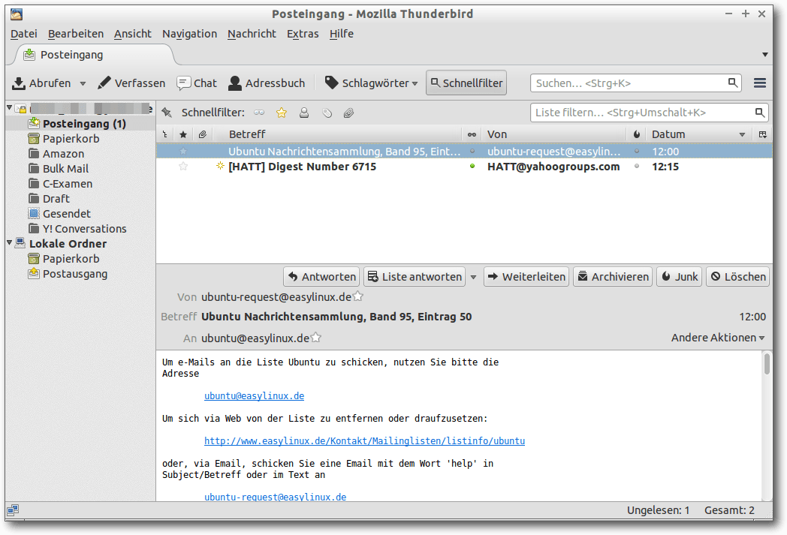Thunderbird mit Posteingang.
Das Programm unterstützt diverse Sicherheitskomponenten wie elektronische Signatur, Nachrichtenverschlüsselung (Enigmail) und Zertifikate. Thunderbird ist sehr gut konfigurierbar und lässt sich durch Add-ons sehr erweitern. Mit Hilfe dieser Add-ons, z. B. Lightning, lässt sich Thunderbird so konfigurieren, dass es im Funktionsumfang etwa Microsoft Outlook entspricht. Enigmail sorgt für PGP/GPG-Unterstützung. 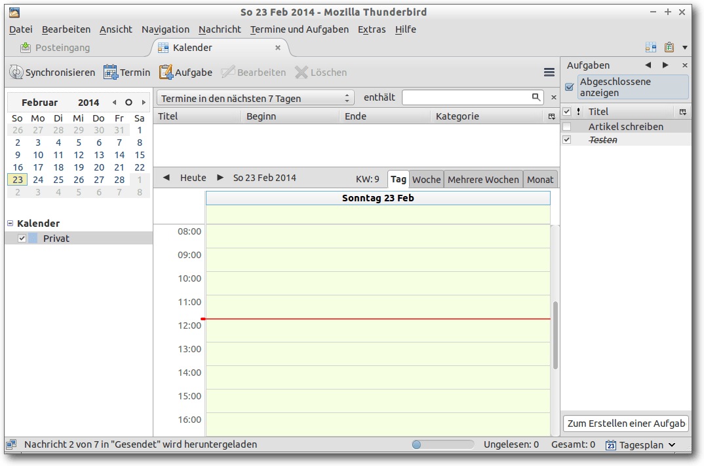
Thunderbird mit Lightning: Kalender und Aufgabenliste.
- Homepage: http://www.mozilla.org/de/thunderbird/
- Lizenz: MPL, GPL, LGPL
- Unterstützte Betriebssysteme: Linux, MacOS X, Windows
- Icedove [14] – Debian-Fork von Thunderbird
Evolution
Evolution [15] ist ein E-Mail-Client und gleichzeitig ein Groupware-Programm, das im Umfang etwa Microsoft Outlook entspricht und entsprechend umfassend ist. Zu den Groupware-Funktionen zählen Kalender, To-Do-Liste und Memofunktion. 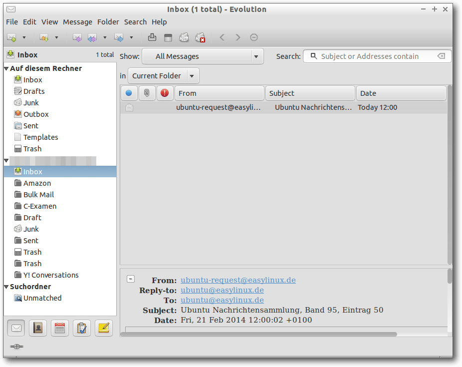Evolution mit Posteingang.
Evolution unterstützt POP3- und IMAP-Konten und kann mit Microsoft-Exchange-Servern kommunizieren. Außerdem kann man mit dem Programm auf Usenet-Newsserver zugreifen. SSL/TSL sowie PGP/GPG-Unterstützung sind in Evolution integriert.
- Homepage: https://wiki.gnome.org/Apps/Evolution
- Lizenz: GPL
- Unterstützte Betriebssysteme: Linux, MacOS X
Evolution mit Kalender und To-Do-Liste.
Sylpheed
Sylpheed [16] ist ein E-Mail-Programm und Newsreader. Das Programm unterstützt POP3- und IMAP-Konten, Newsgroups, Spamfilter, Verschlüsselung und Ordnerhierarchien. Im Gegensatz zu Thunderbird und Evolution verzichtet das Programm jedoch auf die Unterstützung von HTML-E-Mail. Dadurch ist das Programm besonders ressourcenschonend und sehr stabil. Unter Lubuntu ist Sylpheed der Standard-E-Mail-Client.- Homepage: http://sylpheed.sraoss.jp/en/
- Lizenz: GPL
- Unterstützte Betriebssysteme: Linux, Windows
Sylpheed-Posteingang mit IMAP-Konto.
Alternativen und Forks:
- Claws Mail Sylpheed [17] – Fork mit Plug-in-Unterstützung
[1] http://www.mozilla.org/de/firefox/fx/
[2] http://www.geticeweasel.org/
[3] http://www.seamonkey-project.org/
[4] https://www.google.de/intl/de/chrome/browser/
[5] http://www.google.de/
[6] http://www.chromium.org/Home
[7] http://www.srware.net/software_srware_iron.php
[8] http://www.opera.com/de
[9] http://www.konqueror.org/
[10] http://lynx.isc.org/
[11] http://www.jikos.cz/~mikulas/links/
[12] http://links.twibright.com/
[13] http://www.mozilla.org/de/thunderbird/
[14] https://packages.debian.org/sid/icedove
[15] https://wiki.gnome.org/Apps/Evolution
[16] http://sylpheed.sraoss.jp/en/
[17] http://www.claws-mail.org/
| Autoreninformation |
| Maria Seliger (Webseite) ist vor ca. fünf Monaten von Windows 7 auf Lubuntu umgestiegen, was wider Erwarten schnell und problemlos ging, da sich für die meisten Programme unter Windows eine gute Alternative unter Linux fand. |
Diesen Artikel kommentieren
Zum Index
Ein Einstieg in LIRC mit inputlirc
von Steffen Rumberger Verfügt der Computer bzw. die Sound- oder DVB/TV-Karte über einen Infrarot-Empfänger, kann der Computer via Infrarot-Fernbedienung bedient werden, um bswp. die Lautstärke und Medienplayer vom Sofa aus zu steuern. Für die Verarbeitung der Infrarot-Signale der Fernbedienung ist unter Linux LIRC (Linux Infrared Remote Control [1]) verantwortlich. Dies benötigt eine Konfigurationsdatei, die auf die jeweilige Fernbedienung abgestimmt sein muss. Dieser Artikel zeigt eine einfache Lösung mit inputlirc auf, die alle Infrarot-Empfänger unterstützt, die als Human Interface Device (HID [2]) implementiert sind. Diese Geräte vereinheitlichen die benötigte LIRC-Konfigurationsdatei, sodass immer die selben Tastencodes (definiert in der Linux Quellcodedatei input.h [3]) genutzt werden können.Der Infrarot-Empfänger als Eingabegerät
Um den Computer mittels Fernbedienung bedienen zu können, müssen die Pakete inputlirc, ir-keytable und lirc über der Paketverwaltung installiert werden. Das Paket inputlirc installiert den Daemon inputlircd. Dieser wird während des Bootvorgangs gestartet, nimmt die Ereignisse von sämtlichen Empfängern (/dev/input/eventN) entgegen und übergibt sie an alle laufenden LIRC-Clientprogramme wie Medienplayer oder irexec aus dem Paket lirc, damit diese entsprechend die Befehle ausführen. Um eine Liste der verfügbaren Infrarot-Empfänger samt unterstützter Übertragungsprotokolle zu bekommen, wird das Programm ir-keytable ohne Kommandozeilenoptionen aufgerufen:$ ir-keytable
Found /sys/class/rc/rc2/ (/dev/input/event6) with:
...
Hier wurde das Eingabegerät /dev/input/event6 als Infrarot-Empfänger
erkannt.
Wird auf der Fernbedienung nun eine Taste gedrückt, gibt der Empfänger
nicht das empfangene Infrarot-Signal („scancode“ genannt), sondern einen
definierten Tastencode an den LIRC-Deamon inputlircd weiter. Diese
Abstraktion ermöglicht es u. a. für unterschiedliche Geräte der HID-Klasse,
dieselbe Konfiguration zu verwenden. Der LIRC-Deamon inputlircd stößt dann
über ein Unix Domain Socket [4]
(Pfad /var/run/lirc/lircd) die LIRC-Clientprogramme an, damit diese
entsprechend des Tastencodes in der Konfigurationsdatei $HOME/.lircrc
reagieren.
Found /sys/class/rc/rc2/ (/dev/input/event6) with:
...
Tastencodes des Infrarot-Empfängers auslesen
In der sogenannte Übersetzungstabelle sind für die Scancodes die einheitlichen Tastencodes (Keycodes genannt) definiert. Mit folgendem Befehl wird die aktuell vom Empfänger verwendete Übersetzungstabelle ausgelesen:$ ir-keytable --read
...
scancode 0x0017 = KEY_CHANNELDOWN (0x193)
scancode 0x0019 = KEY_CHANNELUP (0x192)
scancode 0x004d = KEY_PLAYPAUSE (0xa4)
...
Der Empfänger reagiert nur auf die in der Übersetzungstabelle definierten
Signale („scancodes“, d. h. der Teil vor dem Gleichheitszeichen) und gibt den
entsprechenden Tastencode („keycode“, also der Teil nach dem
Gleichheitszeichen) weiter.
Wurde zum Empfänger eine Fernbedienung mitgeliefert, zeigt die Tabelle
eine Liste aller Tastencodes, die für die Konfiguration von inputlircd
verwendet werden können. Andernfalls kann die Tabelle auch leer sein. Für
viele Empfänger liegt die Konfiguration unter /lib/udev/rc_keymaps/ ab.
Um zum Empfänger eine passende Fernbedienungen zu finden, ist es wichtig,
das Protokoll des Empfänger zu wissen. Es wird z. B. in der Ausgabe von
ir-keytable --read unter „Enabled protocols:“ angezeigt.
...
scancode 0x0017 = KEY_CHANNELDOWN (0x193)
scancode 0x0019 = KEY_CHANNELUP (0x192)
scancode 0x004d = KEY_PLAYPAUSE (0xa4)
...
$ ir-keytable --read | grep "^Enabled protocols:"
Enabled protocols: NEC
Neben dem Protokoll NEC, gibt es noch andere Protokolle wie bspw. rc-5,
rc-6 und weitere. Die wichtigsten Protokolle listet u. a. das Magazin
ELVjournal [5]
auf.
Enabled protocols: NEC
Nach passender Fernbedienung suchen
Eine passende Fernbedienung zu finden, erfordert etwas Glück. Zuerst sucht man sich alle im Haushalt greifbaren Fernbedienung zusammen, schaut, auf welche der Empfänger reagiert und notiert sich die Scancodes der Tasten. Dazu öffnet man ein Terminal, startet den Befehl ir-keytable --test und testet, ob bei einem Tastendruck auf der Fernbedienung ein Ereignis ausgelöst wird. Hier ein Beispiel:$ ir-keytable --test
Testing events. Please, press CTRL-C to abort.
1385405182.689787: event MSC: scancode = 10ed09
1385405182.689793: event sync
...
^C
Hier wurde ein Ereignis mit dem (hexadezimalen) Scancode 10edf1 ausgelöst.
Werden keine Ereignisse ausgelöst, passen die Übertragungsprotokolle von
Empfänger und Fernbedienung nicht zusammen. Hierauf ist beim Kauf einer
Fernbedienung zu achten. Ggf. kann das verwendete Protokoll geändert
werden. Hier sollte die Dokumentation zur Hardware weiterhelfen.
Um nun die Signale (Scancodes) der Fernbedienung mit dem Empfänger
abzugleichen, muss dem Empfänger eine neue Übersetzungstabelle mit
passenden Scancodes zugewiesen werden.
Für Fernbedienungen die zum Empfänger mitgeliefert wurden, entfällt dieser
Schritt, da vom Hersteller eine Übersetzungstabelle mit passenden
Scancodes bereits hinterlegt ist. Allenfalls die Tastencodes könnten
angepasst werden.
Testing events. Please, press CTRL-C to abort.
1385405182.689787: event MSC: scancode = 10ed09
1385405182.689793: event sync
...
^C
Die Übersetzungstabelle abgleichen
Damit die Übersetzungstabelle bearbeitet und die Scancodes, auf die der Empfänger reagieren soll, eingetragen werden können, kopiert man diese als Root in eine Datei:# ir-keytable --read > /usr/local/etc/ir-keytable.txt
Die Übersetzungstabelle wurde als einfache Textdatei unter
/usr/local/etc/ir-keytable.txt gespeichert und kann mit einem Editor
bearbeitet werden.
Die Übersetzungstabelle besteht aus mehreren Zeilen, die jeweils einem
Scancode einen Tastencode zuweisen, und sieht beispielsweise so aus:
...
scancode 0x05 = KEY_MUTE (0x71)
scancode 0x40 = KEY_VOLUMEDOWN (0x72)
scancode 0x02 = KEY_VOLUMEUP (0x73)
...
Jede Zeile ist eine Wertezuweisung und weist einem Scancode einen
Tastencode zu. Die Syntax dazu ist folgende: Zuerst das Schlüsselwort
scancode und der hexadezimale Wert des Scancode. Dann das
Gleichheitszeichen und der Tastencode der dem Scancode zugewiesen werden
soll. Mögliche Tastencodes, zeigt die Tabelle „Gängige Tastencodes“ unten,
wobei es ausreicht, nur den Namen oder Hexadezimal-Wert anzugeben und
nicht beides, wie im Beispiel oben.
scancode 0x05 = KEY_MUTE (0x71)
scancode 0x40 = KEY_VOLUMEDOWN (0x72)
scancode 0x02 = KEY_VOLUMEUP (0x73)
...
| Gängige Tastencodes | ||
| Name | Hex-Wert | Beschreibung |
| KEY_0 bis KEY_9 | 0x1 bis 0xB | Tasten 0 bis 9 |
| KEY_MUTE | 0x71 | Ton aus |
| KEY_NEXT | 0x197 | Nächstes |
| KEY_PAUSE | 0x77 | Pause |
| KEY_PLAY | 0xcf | Play |
| KEY_PLAYPAUSE | 0xa4 | Play/Pause-Wechsel |
| KEY_POWER | 0x74 | System Beenden |
| KEY_POWER2 | 0x164 | Beenden |
| KEY_PREVIOUS | 0x19c | Vorheriges |
| KEY_STOP | 0x80 | Stopp |
| KEY_VOLUMEDOWN | 0x72 | Leiser |
| KEY_VOLUMEUP | 0x73 | Lauter |
# ir-keytable --clear --write /usr/local/etc/ir-keytable.txt
Ein erneuter Test mit dem Befehl ir-keytable --test sollte dann zeigen,
dass Scancode und Tastencode wie gewünscht zusammenpassen und paarweise
ausgegeben werden.
Da die Übersetzungstabelle nach einem Neustart jedes mal wieder neu
gesetzt werden muss, sollte der obige Befehl in die Datei /etc/rc.local
o.ä. eingetragen werden, damit die geänderte Übersetzungstabelle bei
jedem Neustart dem Empfänger wieder bekannt gemacht wird.
inputlirc konfigurieren
Der Daemon inputlircd erwartet eine Liste mit Eingabegeräten auf der Kommandozeile. Es werden nur Ereignisse von diesen Geräten gelesen. Erkennt der Befehl ir-keytable einen Empfänger, aber inputlircd reagiert nicht darauf, muss geprüft werden, ob das Gerät dort aufgelistet ist. Die Liste ist in der Datei /etc/default/inputlirc in der Variable EVENTS hinterlegt. Taucht das Gerät dort nicht auf, muss es hinzugefügt und die Konfiguration neu eingelesen werden:# service inputlirc reload
Die Distributionen haben i. d. R. jedoch den Daemon inputlircd so
konfiguriert, dass auf alle Eingabegeräte reagiert wird und als
Standardwert EVENTS="/dev/input/event*" hinterlegt, was alle Eingabegräte
umfasst.
Clientprogramme konfigurieren
Medienplayer usw. fungieren meist selbstständig als LIRC-Clientprogramm. Eine Ausnahme ist das Terminal. Dieses hat in der Regel keinen LIRC-Client integriert, wertet die LIRC-Konfigurationdatei nicht aus und reagiert nicht auf Ereignisse vom LIRC-Daemon 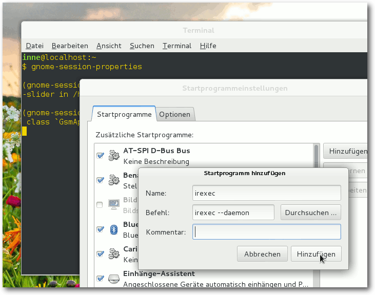Den Dialog für die Startprogrammeinstellungen startet man in der Shell via gnome-gnome-session-properties.
inputlircd, sodass das Programm irexec aus dem Paket lirc benötigt wird, um einen Shell-Befehl zu starten. Ist das Programm irexec gestartet, liest es, wie alle LIRC-Clientprogramme, die Konfigurationsdatei $HOME/.lircrc ein. Die Datei ist eine einfache Textdatei. Um irexec automatisch beim Anmelden zu starten und Shell-Befehle mit der Fernbedienung ausführen zu können, fügt man den Befehl irexec --daemon zum Autostart hinzu. Damit auf Tasten wie die zur Lautstärkeregelung und Ton-An/Aus-Wechsel reagiert wird, muss die LIRC-Konfigurationsdatei $HOME/.lircrc angelegt werden und so aussehen, wie im unten stehenden Listing.
begin
## Lauter
prog = irexec
button = KEY_VOLUMEUP
## Wenn Pulsaudio benutzt wird
config = pactl set-sink-volume 0 -- +13 ## Wenn ALSA bentutzt wird
#config = amixer -q set Master 13end
begin
## Leiser
prog = irexec
button = KEY_VOLUMEDOWN
## Wenn Pulsaudio benutzt wird
config = pactl set-sink-volume 0 -- -13 ## Wenn ALSA bentutzt wird
#config = amixer -q set Master 13end
begin
## Ton-An/Aus-Wechsel
prog = irexec
button = KEY_MUTE
## Wenn Pulsaudio benutzt wird
config = pactl set-sink-mute 0 -- 1
config = pactl set-sink-mute 0 -- 0
## Wenn ALSA bentutzt wird
#config = amixer -q set Master mute
#config = amixer -q set Master unmute
end
begin
## VLC starten und beenden.
prog = irexec
button = KEY_POWER2
## starten und Internetradio öffnen
config = vlc http://livestream.example.net &
## beenden
config = vlc vlc://quit
end
begin
## VLC Play/Pause-wechsel
prog = vlc
button = KEY_PLAYPAUSE
config = key-play-pause
end
Listing: lircrc
Zum Verständnis der Konfigurationsdatei muss man wissen, dass die
LIRC-Clientprogramme bei jeder Betätigung einer Taste auf der
Fernbedienung, von oben nach unten der Reihe nach, alle Blöcke überprüfen.
Ist der jeweilige Block für den jeweiligen Client zuständig (d. h. prog
und button passen) wird der mit config angegebene Befehl vom Client
ausgeführt.
Mehrere aufeinander folgende config-Zeilen werden im Wechsel
ausgeführt,
sodass beim ersten Drücken die erste und bei erneutem Drücken
dann die nächste config-Zeile ausgeführt wird. So lassen sich z. B.
Funktionen wie Ton An/Aus oder Play/Plause-Wechsel erstellen („Toggle“).
Tastensequenzen lassen sich durch mehrere button-Zeilen hintereinander
festlegen.
## Lauter
prog = irexec
button = KEY_VOLUMEUP
## Wenn Pulsaudio benutzt wird
config = pactl set-sink-volume 0 -- +13 ## Wenn ALSA bentutzt wird
#config = amixer -q set Master 13end
begin
## Leiser
prog = irexec
button = KEY_VOLUMEDOWN
## Wenn Pulsaudio benutzt wird
config = pactl set-sink-volume 0 -- -13 ## Wenn ALSA bentutzt wird
#config = amixer -q set Master 13end
begin
## Ton-An/Aus-Wechsel
prog = irexec
button = KEY_MUTE
## Wenn Pulsaudio benutzt wird
config = pactl set-sink-mute 0 -- 1
config = pactl set-sink-mute 0 -- 0
## Wenn ALSA bentutzt wird
#config = amixer -q set Master mute
#config = amixer -q set Master unmute
end
begin
## VLC starten und beenden.
prog = irexec
button = KEY_POWER2
## starten und Internetradio öffnen
config = vlc http://livestream.example.net &
## beenden
config = vlc vlc://quit
end
begin
## VLC Play/Pause-wechsel
prog = vlc
button = KEY_PLAYPAUSE
config = key-play-pause
end
| Mögliche Optionen eines Blocks | |
| Option | Beschreibung |
| proc | LIRC-Clientprogramm, an das sich der Befehl richtet, z. B. irexec, vlc usw. |
| button | Taste, auf die reagiert werden soll |
| config | Client spezifischer Befehl, der vom LIRC-Clientprogramm ausgeführt werden soll. |
$ irexec --daemon
Ist irexec gestartet, sollten durch das Drücken der Tasten für
„Lauter“, „Leise“ und „Stumm“ die entsprechenden Befehle ausgeführt werden.
Für erste Tests und zum Debuggen der LIRC-Konfigurationsdatei ist das
Kommandozeilen-Programm ircat hilfreich. Es kann die Rolle eines
beliebigen LIRC-Clientprogramms annehmen und gibt den Befehl für die
jeweils gedrückte Taste aus, ohne diesen auszuführen.
Als Argument erwartet ircat den Namen des Clientprogramms, das debuggt
werden soll, so wie mit prog in der Konfigurationsdatei angegeben. Um
vorzugeben, ircat sei der VLC Media Player, damit also alle Blöcke mit
gesetztem prog=vlc greifen, muss folgender Befehl ausgeführt werden:
$ ircat vlc
Angemerkt sei noch, dass die Desktopumgebung GNOME Eingabegeräte der
HID-Klasse erkennt und auf die Tastencodes KEY_VOLUMEDOWN, KEY_VOLUMEUP
und KEY_MUTE auch ohne LIRC reagiert. Unter KDE stellt
KDELirc [6] die Verbindung zwischen
LIRC und dem Desktop dar.
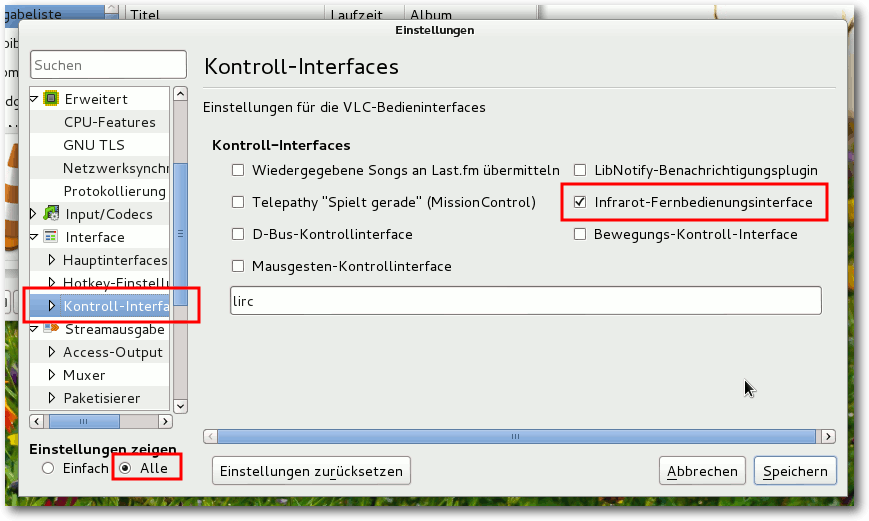Einstellungen des VLC Media Player mit aktiviertem Infrarot-Fernbedinungsinterface.
| VLC-Kommandos für die Option config | |
| VLC-Kommando | Beschreibung |
| key-disc-menu | Zum DVD-Menü gehen |
| key-loop | Normal/Wiederh./Schleife |
| key-nav-activate | Navigation aktivieren |
| key-nav-down | Nach unten bewegen |
| key-nav-left | Nach links bewegen |
| key-nav-right | Nach rechts bewegen |
| key-nav-up | Nach oben bewegen |
| key-next | Nächstes |
| key-pause | Pause |
| key-play-bookmark1 bis key-play-bookmark10 | Wiedergabelistenlesezeichen |
| key-play-pause | Play/Pause-Wechsel |
| key-play | Play |
| key-prev | Vorheriges |
| key-quit | Beenden |
| key-random | Zufällig |
| key-stop | Stopp |
| key-title-next | Nächsten Titel wählen |
| key-title-prev | Vorherigen Titel wählen |
| key-toggle-fullscreen | Vollbild-An/Aus-Wechsel |
| key-vol-down | Leiser |
| key-vol-mute | Ton aus |
| key-vol-up | Lauter |
VLC-Kommandos ausführen
Damit der VLC media player als LIRC-Clientprogamm agiert, die LIRC-Konfigurationsdatei auswertet und per Fernbedienung mittels LIRC gesteuert werden kann, muss die LIRC-Schnittstelle aktiviert sein. Diese aktiviert man im Dialog „Extras -> Einstellungen“, und unten links bei „Einstellungen zeigen“ muss „Alle“ ausgewählt werden. Dann „Interface -> Kontrollinterfaces“ aufrufen und dort „Infrarot-Fernbedienungsinterface“ auswählen. Die verfügbaren Befehle lassen sich im Terminal mit dem Befehl vlc --help --advanced aufrufen, dort werden sie unter „Hotkeys“ aufgelistet. Alle diese Kommandos sind im Quellcode des VLC media player in folgender Datei definiert: ./src/libvlc-module.c [7]IR-Empfänger selbst bauen
Im Netz gibt es Anleitungen für den Empfänger-Bau (als HID implementiert), z. B. USB-IR-Boy [8] und usb-ir-remote [9]. Links[1] http://www.lirc.org/
[2] https://de.wikipedia.org/wiki/Human_Interface_Device
[3] https://git.kernel.org/cgit/linux/kernel/git/torvalds/linux.git/tree/include/uapi/linux/input.h?id=refs/tags/v3.13
[4] https://de.wikipedia.org/wiki/POSIX_local_inter-process_communication_socket
[5] http://www.elv.de/controller.aspx?cid=758&detail=10&detail2=126
[6] http://utils.kde.org/projects/kdelirc/
[7] http://repo.or.cz/w/vlc.git/blob/HEAD:/src/libvlc-module.c
[8] http://usbirboy.sourceforge.net/index.html
[9] http://usb-ir-remote.sourceforge.net/index.html
| Autoreninformation |
| Steffen Rumberger ist Debian GNU/Linux-Nutzer. Er nutzt den VLC Media Player für Internetradio und DVB-T. |
Diesen Artikel kommentieren
Zum Index
Im Test: PocketBook Touch 622
von Dominik Wagenführ Die Welt wird immer digitaler. Auch in Deutschland erfreuen sich elektronische Lesegeräte für Bücher (E-Book-Reader genannt) immer größerer Beliebtheit. Neben dem bekannten Produkt eines großen Internet-Versandhandels gibt es auch viele andere Hersteller. In diesem Artikel soll das PocketBook Touch 622 vorgestellt werden.Besonderheiten von E-Books und E-Book-Readern
Bevor das PocketBook vorgestellt wird, soll zuerst noch erklärt werden, was einen E-Book-Reader ausmacht und was dessen Unterschiede zu einem herkömmlichen gedruckten Buch sind.Modernes Layout
Eine klassische Buchseite besteht normalerweise aus einem Textkörper, einer Kopf- und Fußzeile. Das Layout ist fest vorgegeben und jedes Buch, was gedruckt wird, sieht gleich aus. Es gibt zwar oft verschiedene Editionen, bei denen die Schrift- oder Seitengröße anders ist, aber der Herausgeber weiß immer, wie der Leser später jede einzelne Seite des Buches sieht. Die Anzeige eines E-Books auf dem E-Book-Reader funktioniert anders. Es gibt kein festes Layout, ebenso wenig wie eine Kopf- und Fußzeile. Viele Reader lassen die Schriftgröße und den -stil anpassen. Oft kann man den Reader auch drehen und im Querformat lesen. Deshalb kann der Herausgeber keine Annahmen treffen, wie die Seiten aufgebaut sind. Die Eigenschaften des E-Book-Readers sind dabei gleichzeitig Vor- und Nachteil. Nachteil, weil es eben nicht immer sichergestellt ist, dass z. B. eine große Tabelle überhaupt vollständig abgebildet werden kann. Auch spezielle Layoutmechanismen (z. B. der Abdruck eines Gedichts in einer Rautenform) müssen nicht unbedingt vom Reader eingehalten werden. Der Vorteil wiederum ist, dass der Leser den Text seinen Bedürfnissen anpassen kann. Vor allem für ältere Menschen ist die Zoomfunktion extrem praktisch, um die Buchstaben größer darzustellen.Lesen im Hellen und Dunkeln
Die meisten E-Book-Reader nutzen ein E-Ink-Display [1]. Von der Technik ist es natürlich kein echtes Papier, hat aber, was die Leseeigenschaften angeht, Ähnlichkeiten dazu. Konkret heißt das, dass man mit einem E-Ink-Display auch bei strahlendem Sonnenschein im Freien lesen kann, ohne dass das Gerät einen blendet, wie man das von manchen Laptops mit glänzendem Bildschirm kennt. Ganz im Gegenteil ist mehr Helligkeit sogar besser, um gut lesen zu können – wie bei einem echten Buch. 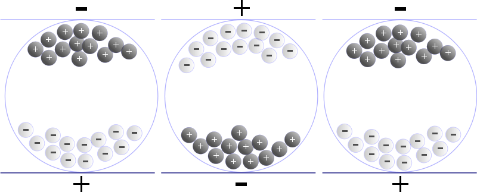Elektrophoretische Anzeige von E-Ink-Displays. © Senarclens (CC-BY-SA-3.0)
{kind=link}
Und wie bei einem Buch kann man normalerweise im Dunkeln nicht lesen, da E-Ink per se keinerlei Beleuchtung hat. Es gibt inzwischen aber schon Geräte, die eine Lichtquelle zuschalten lassen, sodass die Seite auch bei Dunkelheit beleuchtet wird und lesbar bleibt. Ein weiterer Nachteil der herkömmlichen E-Ink-Displays ist die geringe Reaktionszeit. Das heißt, wenn man eine Seite umblättert, erscheint nicht sofort der neue Text, sondern es dauert etwas, ehe der Text sichtbar ist. Heutige Geräte sind dabei aber so schnell, dass das Umschalten in etwa genauso lange dauert wie das Umblättern einer Buchseite. Ein großer Vorteil von E-Ink ist dessen Energiesparsamkeit. Für die reine Anzeige des Textes muss so gut wie keine Energie aufgewendet werden. Nur für den Aufbau einer neue Seite benötigt man Strom. Das führt dazu, dass Gerätehersteller die Akkuleistung nicht in Stunden angeben, sondern in Seiten, die man betrachten kann. Wie ein echtes Buch kann man einen E-Book-Reader offen auf den Nachtisch legen und ohne Energieverbrauch am nächsten Abend weiterlesen (auch wenn die meisten Reader sich dann von selbst ausschalten). Ein kleiner Nachteil ist die Anzahl an dargestellten Farben. Heutige, moderne Geräte können auch schon eine geringe Anzahl an Farben darstellen, es ist aber kein Vergleich zu den 16,7 Millionen Farben eines Tablets. Viele der verfügbaren Geräte zeigen dagegen nur Graustufen an und dann auch nur 16 Grauwerte. In der Regel stört das aber nicht, da die meisten Bücher sowieso in Schwarz-Weiß gedruckt sind. Somit fallen die fehlenden Farben nicht auf. Vom Schriftbild her können heutige E-Book-Reader mit einem Taschenbuch locker mithalten. Die Ansicht wirkt dann wie gedruckt und liest sich sehr angenehm.
Ich leih Dir mein Buch – nicht
Verleiht jemand heute noch Bücher an Freunde? In Zeiten von DVD und Blu-ray ist es eher wahrscheinlicher, dass man den neuesten Kinofilm an seine Freunde gibt. Dennoch ist der große Vorteil eines herkömmlichen Buches, dass man es verleihen kann. Vor allem für Büchereien ist es essentiell, dass die Bücher von den Lesern ausgeliehen und daheim gelesen werden können. Diverse Buchtauschbörsen im Netz deuten ebenfalls darauf hin, dass das Interesse, Bücher weiterzugeben, noch besteht. (An dieser Stelle soll auf BookCrossing [2] verwiesen werden, das eine sehr nette Idee für die Buchweitergabe gefunden hat.) E-Books haben den „Nachteil“, dass sie nur digital vorliegen. Und weil sich digitale Medien schnell kopieren lassen, verkaufen die meisten Verlage ihre Bücher nur mit DRM-Schutz (kurz für Digitales Rechtemanagement [3]). Dieser sorgt dafür, dass die Bücher oft personalisiert und nur auf dem einen Gerät des Käufers lesbar sind. Ein Verleih und ein Verkauf sind dann so gut wie ausgeschlossen.Sonstige Merkmale
E-Book-Reader und E-Books haben aber noch weitere Vorteile. So kann man in E-Books Inhalte verlinken, wodurch die Auffinden und vor allem das direkte Springen zu einer bestimmten Textstelle mit einem Index oder über das Inhaltsverzeichnis sehr schnell geht. Und wenn man etwas nicht findet, kann man Dank der Suchfunktion, die eigentlich alle E-Book-Reader haben, sehr einfach das gesamte Buch nach bestimmten Begriffen durchforsten. Ebenso ist das Markieren und manchmal auch Kommentieren von Inhalten im Buch selbst möglich, ohne dass man das Buch dadurch mit einem Stift „verschandeln“ muss. Die Datenübertragung von Inhalten geschieht meist per USB-Anschluss über den heimischen Computer. Neuere Geräte haben aber auch WLAN integriert, sodass man sie leicht in das Heimnetzwerk einbinden kann. 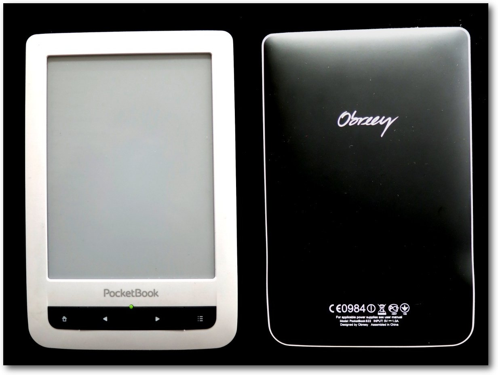Das PocketBook Touch 622.
Das PocketBook Touch 622 im Detail
Hardware und Daten
PocketBooks [4] werden von der PocketBook International S.A. hergestellt, die anfangs hauptsächlich auf den russisch-sprachigen Raum ausgerichtet war. Inzwischen gibt es aber im ganzen europäischen Raum Niederlassungen, die die Geräte vertreiben. Das PocketBook Touch 622 erschien im März 2012 und war das erste Gerät der PocketBook-Reihe mit Touch-Screen. Ein Umblättern der Seiten ist durch das Berühren des Bildschirms möglich. Zusätzlich gibt es aber auch noch zwei Tasten an der unteren Vorderseite, womit man ebenfalls Vor- und Zurückblättern kann. Intern verbaut sind 2 GB Speicher, die das Betriebssystem und etwaige Medien beherbergen müssen. Über einen MicroSD-Slot kann man die Speicherkapazität um bis zu 32 GB erhöhen. Die Daten selbst werden entweder per WLAN oder per Micro-USB-Anschluss, der sich an der Unterseite des Gerätes befindet, übertragen. Ebenfalls an der Unterseite befindet sich ein Kopfhöreranschluss (3,5-mm-Klinkenstecker).Anschlusse an der Unterseite des Gerätes.
Der Bildschirm misst 6 Zoll und hat 600x800 Bildpunkte bei 166 dpi. Die Anzeige erfolgt in 16 Graustufen, was Farbbilder natürlich nicht so gut aussehen lässt.
Software
Als Betriebssystem wird ein angepasstes Linux mit Kernel 2.6.35 eingesetzt. Wenn man den Reader einschaltet, begrüßt einen eine Liste der zuletzt betrachteten Bücher oder direkt das zuletzt geöffnete Buch. Vorinstalliert sind zahlreiche freie Bücher, darunter sowohl deutsche Werke von Franz Kafka, Heinrich Heine, Johann Wolfgang von Goethe, Friedrich Schiller oder Theodor Fontane als auch viele englische wie Arthur Conan Doyle, Lewis Carroll, Charles Dickens, Jane Austen oder Bram Stoker. Weitere Werke gibt es in den Sprachen Russisch, Französisch, Italienisch, Spanisch und zahlreiche mehr. Die Bücher können auf der Webseite auch für andere Geräte heruntergeladen werden [5]. 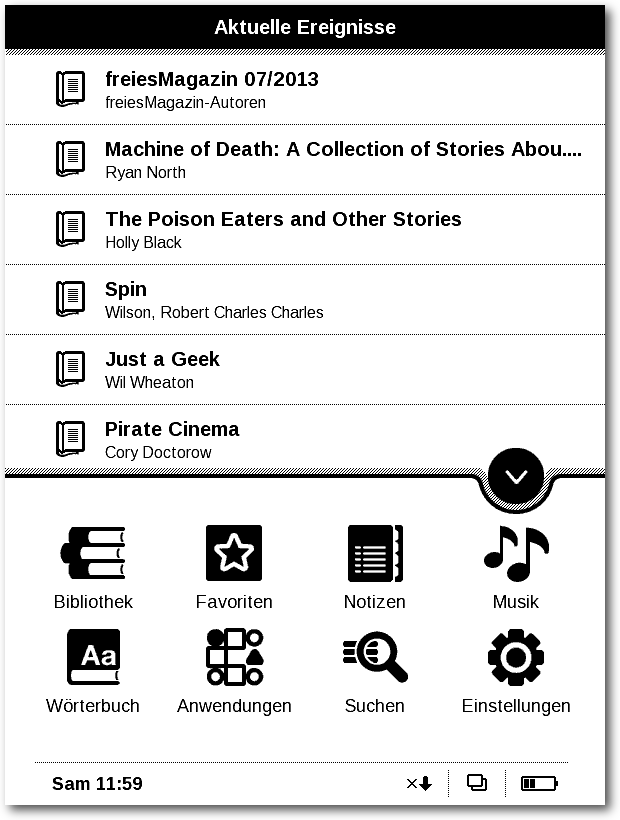Das Hauptmenü.
Das Hauptmenü lässt sich durch ein Berühren des Pfeils in der rechten unteren Ecke bzw. durch das Drücken des Knopfes mit dem Haus auf der rechten unteren Seite aufklappen. Im Hauptmenü findet man dann die Bibliotheksverwaltung, kann Notizen eintragen, Musik hören, diverse Anwendungen starten oder Einstellungen ändern. Selbst kleine Spiele sind vorinstalliert wie Solitaire oder Sudoku. Aufgrund der E-Ink-Technik können natürlich keine Spiele angeboten werden, die einen ständigen Bildaufbau benötigen, da sonst der Akku sehr schnell leer wäre. Das PocketBook unterstützt zahlreiche Dateiformate für Bücher und Texte. Natürlich auch PDF sowie den Quasi-Standard für E-Books: EPUB [6]. Daneben kann man aber auch Microsoft-Dateien im DOC- oder DOCX-Format sowie HTML- und RTF-Dokumente anzeigen. Das OpenDocument-Format wird leider nicht unterstützt. Als Bildformate werden die Standardformate für Bitmap-Bilder JPEG, BMP, PNG und TIFF unterstützt. Eine Darstellung von Vektorgrafiken (z. B. SVG) ist nicht möglich. Daneben kann man mit dem Touch 622 auch MP3s abspielen – da es keinen Lautsprecher gibt, natürlich nur über Kopfhörer. Andere Audio-Formate werden nicht unterstützt.
Erfahrungen mit dem PocketBook Touch 622
Anschaffungsgründe
Das Gerät wurde aus zwei Gründen angeschafft. Der erste war, dass es auf Radreisen wesentlich praktischer ist, wenn man ein 200 g leichtes Gerät mit zig Büchern in der Tasche mitführen kann als zwei oder gar drei dicke Wälzer, die einen zwei Wochen beschäftigen sollen. Das Touch 622 ist sogar so handlich (11,4 x 17,4 cm), dass es in eine breitere Jackentasche passt und so sehr leicht transportiert werden kann. Der zweite Grund, dass es genau dieser E-Book-Reader geworden ist, war Linux als Betriebssystem. Zusätzlich beherrscht das PocketBook sehr viele Formate (siehe oben), vor allem aber EPUB. So gut wie alle Reader können dieses Format lesen – außer das Amazon Kindle [7].Formate und DRM
Das Gerät wurde im Oktober 2012 gekauft und seitdem sporadisch auf Reisen eingesetzt. Neben den freien, vorinstallierten Büchern haben vor allem die Humble E-Book-Bundles 1 [8] und 2 [9] für Unterhaltung gesorgt bzw. sorgen immer noch dafür. Mit dem Gerät können aber auch DRM-geschützte Bücher gelesen werden. Da diese aber grundsätzlich mit Adobe DRM geschützt sind, muss man hierfür die Software „Adobe Digital Editions“ installieren – die nicht unter Linux funktioniert. Zusätzlich sollte man sich aber eh die Frage stellen, ob man 12 Euro für ein Buch ausgeben will, das man nicht verleihen oder wieder verkaufen kann und oft nur auf einem einzigen Gerät lesen darf. Insgesamt wurde nicht getestet, wie sich Adobe-DRM-geschützte E-Books auf das Gerät übertragen oder anzeigen lassen. 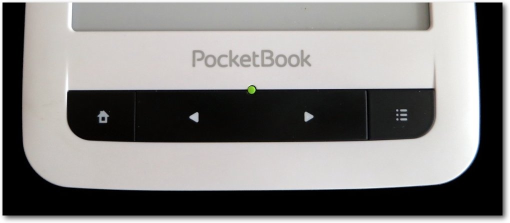Das Gerät hat nur sehr wenige Tasten.
Die Darstellung von EPUBs erfolgt größtenteils ohne Probleme. Es gab einige Tabellen oder Bilder, die zu groß für das 6-Zoll-Display waren und nicht komplett angezeigt werden konnten. In manchen Büchern fehlte auch das Ende von Sätzen, was aber vermutlich nicht Schuld des Readers ist, sondern des benutzten E-Books. Die Darstellung von PDF geht auch problemlos, aber durch das starre Layout von PDFs muss man hier stark mit der Zoomfunktion arbeiten bzw. scrollen.
Benutzung
Die Benutzung des Gerätes ist sehr leicht. Durch eine Berührung der Mitte eines der äußeren Ränder blättert man eine Seite vor, durch eine Berührung der unteren beiden Ecke eine Seite zurück. Alternativ kann man dafür auch die Pfeiltasten auf dem Gerät selbst nutzen, was an und ab notwendig ist, weil das Gerät die Berührung zwar erkennt, aber dennoch nicht umblättern will. Durch die Berührung der oberen linken Ecke kommt man zurück ins Hauptmenü, über die rechte obere Ecke kann man Lesezeichen setzen, die auch dort angezeigt werden. 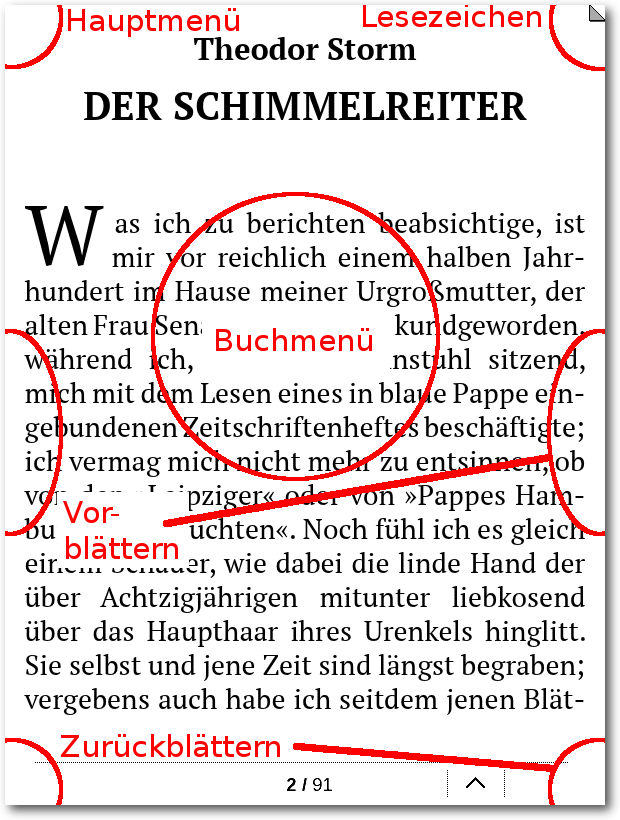Über die Ecken und Seiten kann man Umblättern.
Die Zoomfunktion lässt sich wie bei vielen anderen Geräten auch nutzen, indem man zwei Finger auf das Display legt und diese entweder auseinanderzieht oder zusammenschiebt. Die Schriftgröße und die Schriftart lassen sich aber auch als Standardeinstellung im Hauptmenü für alle Bücher gemeinsam einstellen. Berührt man die Mitte des Bildschirms, erscheint ein Buchmenü, über das man verschiedene Funktionen wie Drehen der Ansicht, den Suchdialog, das Inhaltsverzeichnis oder den Notizblock auswählen kann. 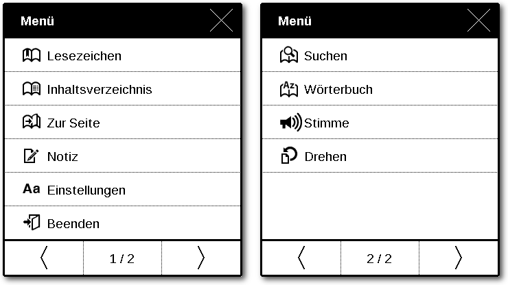
Verschiedene Anwendungen erreicht man über das Buchmenü.
Funktionen
Wer nicht selbst lesen möchte, findet im Buchmenü auch eine Option zum Vorlesen des Textes. Vorinstalliert sind verschiedene weibliche Stimmen für Deutsch, Englisch Französisch und Italienisch. Weitere können auf der Webseite [5] heruntergeladen werden. Die Sprachausgabe ist dabei okay, aber natürlich kein Vergleich zu einem menschlichen Sprecher, der die Betonung der Worte und Satzteile besser hinbekommt als eine Maschine. Die Eingabe von Notizen ist sehr umständlich, da das Gerät einen kapazitiven Touchscreen [10] besitzt. Konkret heißt, dass sich das Gerät nicht mit Handschuhen oder einem normalen Stift bedienen lässt. Und mit dem Finger Notizen schreiben ist schwer bis unmöglich. Da das PocketBook keinen Bewegungssensor besitzt, muss die Ansicht im Hoch- oder Querformat manuell eingestellt werden, was man ebenfalls im Buchmenü findet. Nützlich für diesen Artikel war noch die vorhandene Screenshot-Funktion.Internetverbindung und Obreey Store
Da das PocketBook Touch 622 eine WLAN-Verbindung hat, kann man über den integrierten Webbrowser auch Surfen. JavaScript wird dabei unterstützt, Flash natürlich nicht. Aufgrund der E-Ink-Technik sollte man keine Seiten besuchen, die eine ständige Aktualisierung des Bildinhaltes nach sich zieht. 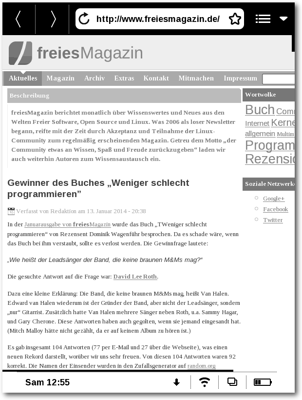freiesMagazin-Webseite im PocketBook-Browser.
Neue Bücher kann man über den Obreey Store [11] kaufen, wenn man will. Obreey ist dabei auch der Hersteller der PocketBook-Software. Die Benutzung im Browser auf dem Reader selbst macht aber keinen Spaß, da man für Login und Suche sehr viel Zeit und Geduld braucht. Daher empfiehlt sich ein Kauf über den PC. Die Bücher im Obreey Store sind ebenfalls DRM-geschützt. Entweder gibt es eine Zeitbeschränkung, wie lange oder eine Begrenzung, wie oft man ein Buch herunterladen kann. Obwohl es auf dem PocketBook die Anwendung „ObreeySync“ gibt, wurde es nicht geschafft, diese korrekt einzurichten [12]. Demzufolge konnte nicht getestet werden, wie der direkte Bezug von Büchern aus dem Obreey Store mit dem Reader erfolgt. Immerhin können die Bücher auf den PC heruntergeladen und per USB übertragen werden.
Akkuleistung
In der Zeit der Benutzung musste das Touch 622 bisher erst zweimal an die Steckdose, um geladen zu werden. Laut Hersteller hält der Akku für ca. 8000 Seiten. Ob es wirklich so viele sind, ist nicht klar, aber es dauert wirklich sehr lange, bis der Akku leer ist. Erreicht wird das unter anderem auch dadurch, dass das Bild nicht bei jedem Blättern komplett neu aufgebaut wird, sondern nur bei jeder fünften Seite. Dadurch spart man Strom, erhält aber auch einen „Geister-Effekt“, sodass die Umrisse einzelner Buchstaben der Vorgängerseite leicht sichtbar sind. Dies stört aber nur minimal und kann in den Einstellung wahlweise auch auf 10, 3 oder jede Seite umgestellt werden. Dies kostet dann aber eben entsprechend mehr Akkuleistung. Ebenso kostet es sehr viel Akkuleistung, wenn man WLAN aktiviert hat oder Musik hört. 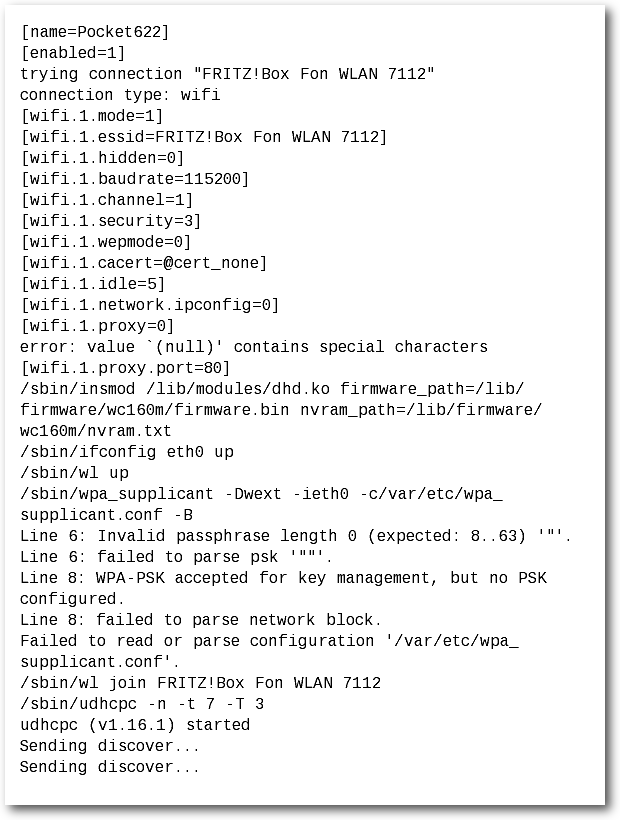An manchen Fehlerprotokollen merkt man, dass es Linux ist.
Fazit
Insgesamt bin ich mit dem PocketBook Touch 622 sehr zufrieden. Dass die Berührung ab und an nicht erkannt wird, stört etwas, ist aber nicht so gravierend. Die Akkuleistung ist super, ebenso wie die Anzeige und das Leseempfinden. Vor allem auf Reisen ist der E-Book-Reader eine sehr gute Wahl. Da auf dem Gerät nur DRM-freie bzw. komplett freie Bücher gelesen werden sollen, ist es nicht so schlimm, dass Adobe-DRM nicht unter Linux funktioniert. Und auch das Problem mit der Anbindung an den Obreey Store stören nicht wirklich. Zum Surfen kann man den Reader nicht verwenden, ebenso wenig sollte man darauf längere Zeit Musik hören. Aber das Gerät ist dafür auch nicht primär gedacht, sondern für die Anzeige von elektronischen Büchern – und das kann das Touch 622 sehr gut. Das Gerät hat darüber hinaus noch weitere Funktionen, die nicht alle im Artikel erwähnt werden konnten. Aber selbst nach zwei Jahren kann man mitunter noch die ein oder andere Neuheit entdecken, wenn man mit dem Reader herumspielt.Das PocketBook mit Schutzhülle.
Einen anderen Test findet man bei e-Leseratte [13].
DRM-freie Bücher
Zum Abschluss soll noch kurz auf DRM-freie Bücher eingegangen werden. Im November 2012 ging folgende Nachricht an die Buchhändler von Bookzilla, Libri/ebook.de, Thalia/buch.de, Bücher.de, Jokers/Ciando, Hugendubel und Obreey heraus:
Guten Tag,
ich besitze seit kurzem einen E-Book-Reader (ein PocketBook Touch 622) und suche nun natürlich auch passende E-Books im EPUB-Format dafür. Ich lese bei Ihren E-Books aber, dass diese mit Adobe-DRM geschützt sind. Da ich ein Linux-Betriebssystem nutze und die Adobe-Software nicht dafür bereitgestellt wird und ich mir sowieso nichts von Adobe installieren möchte, stellt sich mir die Frage, ob es auch andere Möglichkeiten gibt. Bieten Sie zum Beispiel DRM-freie E-Books an? Oder bekomme ich die E-Books auch anders auf mein Gerät? Ich freue mich auf Ihre Antwort!
Die meisten Händler antworteten recht schnell und verwiesen auf
Wine [14] zur Ausführung von Adobe Digital Editions.
Bookzilla wies darauf hin, dass einige Verlage inzwischen auch DRM-freie
Bücher anbieten. Dementsprechend können die Händler auch nichts dafür, dass
die Bücher mit DRM angeboten werden, da diese Vorgabe von den Verlagen kommt.
Auf eBook-Fieber.de findet man eine kleine Liste an erhältlichen DRM-freien
Büchern [15].
Dort sind auch Buchhändler gelistet, die ausschließlich DRM-freie Bücher
anbieten, u. a.
EPUBbuy.com [16], Beam
eBooks [17] oder Ebozon [18].
Ebenfalls empfehlenswert ist das
Gutenberg-Projekt [19], das
zahlreiche freie Bücher anbietet, deren Urheberrecht bereits erloschen ist.
Linksich besitze seit kurzem einen E-Book-Reader (ein PocketBook Touch 622) und suche nun natürlich auch passende E-Books im EPUB-Format dafür. Ich lese bei Ihren E-Books aber, dass diese mit Adobe-DRM geschützt sind. Da ich ein Linux-Betriebssystem nutze und die Adobe-Software nicht dafür bereitgestellt wird und ich mir sowieso nichts von Adobe installieren möchte, stellt sich mir die Frage, ob es auch andere Möglichkeiten gibt. Bieten Sie zum Beispiel DRM-freie E-Books an? Oder bekomme ich die E-Books auch anders auf mein Gerät? Ich freue mich auf Ihre Antwort!
[1] https://de.wikipedia.org/wiki/Elektronisches_Papier
[2] http://www.bookcrossing.com/
[3] https://de.wikipedia.org/wiki/Digitale_Rechteverwaltung
[4] http://www.pocketbook-int.com/de/
[5] http://www.pocketbook-int.com/de/support/pocketbook-touch
[6] https://de.wikipedia.org/wiki/EPUB
[7] https://de.wikipedia.org/wiki/Amazon_Kindle#Kritik
[8] http://www.deesaster.org/blog/index.php?/archives/2008
[9] http://www.deesaster.org/blog/index.php?/archives/2172
[10] https://de.wikipedia.org/wiki/Touchscreen#Projiziert-kapazitiver_Touch
[11] http://store.obreey.com/deu
[12] https://store.obreey.com/deu/help/obreey-sync
[13] http://www.e-leseratte.de/2012/05/04/pocketbook-touch-622-im-1-000-seiten-test/
[14] http://www.winehq.org/
[15] http://ebook-fieber.de/e-books/wo-man-drm-freie-ebooks-herbekommt
[16] http://www.epubbuy.com/
[17] http://www.beam-ebooks.de/
[18] http://ebozon.com/
[19] http://www.gutenberg.org/browse/languages/de
| Autoreninformation |
| Dominik Wagenführ (Webseite) liest sehr gerne, bevorzugt aber echte Bücher zum Lesen. Dennoch ist das PocketBook Touch auf Radreisen unverzichtbar. |
Diesen Artikel kommentieren
Zum Index
PyLadies Vienna – Interview mit Floor Drees
von Horst Jens Floor Drees [1], Gründerin der Lerngruppe Pyladies Vienna [2], beantwortete in diesem Interview Fragen zur Programmiersprache Python, zu PyLadies, zum Unterschied zwischen Holland und Österreich sowie zur Situation von Frauen in der IT-Branche. Redaktioneller Hinweis: Das Interview mit Floor Drees erschien erstmals im RIS Journal [3].Floor Drees.
CopyLinkCliff Kapataishttp://pixelcoma.at/(CC-BY-SA-4.0)
Interview mit Floor Drees
-> Hallo Floor, bitte erzähl kurz etwas über Dich. Wo bist du her, warum bist Du in Wien, wovon lebst Du? <- Hallo. Ich studierte Grafik-Design in Rotterdam und arbeitete dort einige Jahre als „Community Managerin“ bevor ich nach Wien zog, um in einem Startup zu arbeiten. Ich sagte mir, ich bleibe für vielleicht ein Jahr in Wien, aber es wurden zweieinhalb Jahre daraus. Seit ich nach Wien zog, hat sich viel verändert. Ich begann mich fürs Programmieren zu interessieren. Ich begann CSS, Ruby und Python zu lernen und bekam einen Job als „Developer Evangelist“ bei CheckiO [4], einer Spiele-Plattform für Programmierer. Ich liebe es, Kommunikationsfähigkeiten mit technischen Fähigkeiten zu kombinieren, und Dank der Arbeit bei CheckiO („gamified learning“ [5]) konnte ich meine Programmierfähigkeiten ordentlich verbessern! -> Was ist Deiner Erfahrung nach der auffälligste Unterschied bei Land und Leuten zwischen Holland (bzw. anderen Ländern) und Österreich? <- Was ich generell als größten Unterschied erlebt habe, ist die „Schau mer mal“-Mentalität hier. Ich kann mich ziemlich begeistern für ein Projekt und möchte sofort loslegen. Die meisten Österreicher sind da konservativer, schätze ich. Vielleicht sind Holländer einfach nur direkter. Ich hatte das Gefühl, sobald ich jemanden gefunden hatte, der gern mit mir arbeitet, waren sie voll dabei. Es hat nur ein bisschen länger gebraucht. -> Warum sollten junge Leute (speziell Mädchen) programmieren lernen? <- Ich denke, die Fähigkeit zu programmieren ist der „Skill“ der Zukunft. So, wie die Baby-Boomer lernen mussten, mit all den Computern um sie herum umzugehen. Wer das nicht macht, würde sich selbst vom Arbeitsmarkt ausschließen. Um von meiner eigenen Erfahrung zu sprechen, ich wurde wesentlich besser in meinem Job als Community-Manager, sobald ich lernte, die Wünsche der Community den Entwicklern zu übersetzen. Ich denke, es ist eine wichtige Fähigkeit, wenigstens die Grundlagen von Markup und Styling (HTML/CSS) zu verstehen, zu wissen was unter der Oberfläche passiert und vielleicht leicht verständlichen Programmcode wie Ruby oder Python lesen zu können. Und falls diese Jugendlichen zufällig Mädchen sind und sich für solche Sachen interessieren, dann hoffe ich sehr, dass sie ihre Studien in diesem Gebiet weiterverfolgen, denn wir brauchen dringend mehr Vielfältigkeit um bessere Software zu erschaffen! -> Was war deine Motivation Programmieren zu lernen? Hattest du ein (weibliches) Rollenmodell? <- Das klingt vielleicht lustig, aber ich wollte eigentlich Bugs fixen. Und ich wollte lernen, wie man mit den Entwicklern bei dem Startup halbwegs professionell kommuniziert. Ich fing an, die Rails-Girls-Tutorials [6] mit einem Arbeitskollegen durchzuarbeiten. Er ist extrem gut mit CSS vertraut und ein sehr geduldiger Typ. Später verbrachte ein anderer Freund und Ex-Arbeitskollege seine Wochenenden damit, mir und einem Freund Ruby „the test driven way“ beizubringen. Diese Unterstützung bedeutete enorm viel für mich. Was ich als Community-Managerin über die Jahre gelernt habe ist, dass ein großer Teil der Arbeit darin besteht, gut reden zu können. Ich begann all die Konferenz-Vorträge über Programmierung anzuschauen und ich lauschte inbrünstig dem Ruby Rogues Podcast [7]. Am Anfang musste ich alle zehn Minuten die Pause-Taste drücken, um die Fachbegriffe nachzuschlagen. Aber nach einer Weile begann ich Dinge im Kopf miteinander zu verbinden und erkannte Begriffe, und ich konnte eine ganze Episode ohne Pause anhören. All die Jungs und Mädels bei Ruby Rogues wurden für mich zu Vorbildern. Ich mochte speziell die Bücher von Avdi Grimm, (z. B. „Objects on Rails“ [8] oder „Confident Ruby“ [9]). Seine Bücher habe ich von vorne bis hinten gelesen. Ebenso wie die von Katrina Owen [10]. -> Was war Deine erste Programmiersprache? <- Zuerst probierte ich mit PHP herum, als ich anfing mit WordPress zu arbeiten. Ich war damals 18 Jahre alt oder so. Aber das war mehr ein „Löschen, neu laden und schauen, was passiert“-Ansatz! -> Warum jetzt Python? <- Ich arbeitete für mehrere Startups, die Python verwendeten, und ich hatte mit Django zu tun, sodass es logisch war, dass Python als nächstes auf meine Liste kam. Und, nicht zu vergessen, Python Erfinder Guido van Rossum ist Holländer! -> Was ist PyLadies Vienna? <- Immer wenn ich etwas neues lerne, brauche ich sozialen Druck. Alleine lernen kann sehr öde sein und ich wollte andere Anfängerinnen finden, die den Samstag mit mir gemeinsam verbringen wollten, um zu lernen. Deshalb organisierte ich einen ersten Workshop, suchte mir ein Tutorial aus, besorgte Kekse und legte los. Dass ich eine Pyladies-Gruppe gründete, war eher Zufall. Ich las über diese internationale Bewegung und dachte mir, dort mitzumachen, würde mir dabei helfen, Teilnehmerinnen und Unterstützung zu finden – was schlussendlich auch funktionierte! Ich bin sehr zuversichtlich, dass PyLadies Vienna mit Laura als neuer Anführerin weiterhin wachsen wird und dass die geplante Zusammenarbeit mit Laber's Lab [11] (die haben die Arduino-Bootcamps in Wien organisiert) funktionieren wird.Python-Cookies. © Floor Drees (CC-BY-SA-4.0)
-> Wie ist Deine Erfahrung mit Frauen in der Technik? <- Generell gibt es da zu wenig Frauen – haha! Aber immer wenn ich Entwicklerinnen kennenlerne, sind diese total begeistert vom Programmieren und dieser Enthusiasmus ist ansteckend. -> Warum glaubst Du, gibt es hauptsächlich männliche Programmierer in Österreich (und anderen Ländern)? <- Ich persönlich denke – und vielleicht liege ich falsch – dass Informatik als Fach in den Schulen nicht sehr attraktiv für Mädchen ist. Ich war wirklich schlecht in Mathematik und habe die Aufgaben nie interessant gefunden. Warum soll ich die Wahrscheinlichkeit, eine rote Murmel aus einem Sack zu ziehen, ausrechnen? Ich lechzte nach Beispielen aus dem echten Leben. Unsere Informatikstunden ertranken in Mathematik-Rätseln. Ich hätte dagegen wirklich gerne gelernt, wie man Homepages selber macht (HTML, CSS, vielleicht JavaScript). Etwas machen, wo man nach einem Knopfdruck die Früchte der eigenen Arbeit bewundern kann. Das hätte mich total fasziniert. Mir fällt auf, dass auf den Rails-Girls-Workshops, welche ich unterrichte (und die ich organisiere), die meisten Teilnehmerinnen ebenfalls dieses sofortige Feedback suchen. -> Was ist Dein schlimmstes Vorurteilserlebnis (in Bezug auf Frauen in Technik)? Welche typische Aussage nervt dich speziell? <- „Wenn sie (Frauen) sich (für Technik) interessieren würden, dann wären sie hier. Wir sind offen für alle.“ – Das ist so vergiftet. Viele Frauen, die mit Programmieren anfangen, sind schon etwas älter, weil sie in der Schule nie dafür interessiert wurden. Manchmal sind sie oder fühlen sich wie Anfängerinnen. Wenn sie dann Bilder von Meetings mit fast 100% Männeranteil sehen, dann wirkt das nicht sehr einladend. Du fürchtest, dass Deine Fähigkeiten in Frage gestellt werden – was manchmal auch passiert. Bestes Beispiel: Oft kommen neue Leute zu Vienna.rb-Meetings [12], die ich mit organisiere. Bis die Leute sehen, dass ich den Eröffnungsvortrag halte, glauben sie, ich bin die Servierkraft vom Catering. Das ist nicht cool, aber ich kann meistens drüber lachen. -> Was ist Dein bestes Technik/Geschlechter-Erlebnis? <- Ich finde die Ruby/Rails-Gemeinschaft als Ganzes sehr einladend. Ich teile mit anderen meine Code-Schnipsel oder erzähle, welches Buch ich gerade lese, und ich bekomme super nettes Feedback via Twitter. Vielleicht spielen Rails Girls und Railsbridge eine große Rolle dabei, ein so sicheres Umfeld zu schaffen. Als ich neulich fragte, wer mit mir zusammen an einem JavaScript-Projekt arbeiten will, bekam ich auch extra nette Antworten. -> Welchen Rat hast Du für junge Mädchen, die sich für eine Programmierkarriere interessieren? <- Du fragst eine Kunststudentin, die zuerst Social-Media-Managerin wurde, um dann eine Kehrtwendung zu machen und jetzt Webseiten zu erstellen! Mein Rat: Folge Deinem Herz! Da draußen gibt es Ressourcen, die Dir helfen werden, wenn Du Deine Meinung änderst und etwas anderes lernen willst. Und ich hoffe, Du bewahrst Dir Offenheit und eine gesunde Portion Neugier (aufs Programmieren natürlich). -> Letzte Lebensweisheiten für die jungen Leser und Leserinnen? <- Was sie Dir in der Schule beibringen ist, wie man sich Wissen aneignet, nicht endgültiges Wissen. Da draußen gibt es so viel, benutze Deine Fähigkeiten, um etwas zu lernen, was Du nützlich und interessant findest. Oft wirst Du Leute finden, die Dich dabei anleiten – vielleicht sogar Deine Lehrer! Links
[1] http://www.1stfloorgraphics.nl/
[2] http://spielend-programmieren.at/de:ris:001
[3] http://www.checkio.org/
[4] https://de.wikipedia.org/wiki/Gamification
[5] http://railsgirls.com/
[6] http://rubyrogues.com/
[7] http://objectsonrails.com/
[8] http://www.confidentruby.com/
[9] http://kytrinyx.com/
[10] http://www.pyladies.com/
[11] http://events.laberslab.com/
[12] http://vienna-rb.at/
| Autoreninformation |
| Horst Jens (Webseite) ist Gründer der Firma Spielend-Programmieren. und bietet dort für Jugendliche und Schulen Open-Source-Game-Programming-Kurse an. Daneben veröffentlicht er das RIS Journal und einen Podcast. |
Diesen Artikel kommentieren
Zum Index
Rezension: Linux-Kommandoreferenz
von Dominik Honnef Als Linux-Nutzer kommt man früher oder später mit der Konsole in Berührung. Und falls man nicht direkt abgeschreckt wird, findet man oft auch Gefallen an ihr. Doch wie findet man heraus, welche Befehle beziehungsweise Programme es gibt und wie man sie verwendet? Redaktioneller Hinweis: Wir danken Galileo Computing für die Bereitstellung eines Rezensionsexemplares. Wenn man bereits weiß, welchen Befehl man verwenden möchte und die gesamte Dokumentation lesen will, so führt kein Weg an den Man-Pages vorbei. Benötigt man jedoch einen schnellen Einstieg oder eine Übersicht zu den typischsten Optionen möchte man nicht unbedingt seitenweise Dokumentation lesen. Hier schafft die Linux-Kommandoreferenz Abhilfe. Sie versteht sich nicht als Ersatz für Man-Pages sondern als ergänzendes Werk, um die wichtigsten Teile der Dokumentation zusammenzufassen.Was steht drin?
Ein großer Vorteil des Buches ist die Tatsache, dass man stöbern kann. Denn woher soll man wissen, was man will, wenn man nicht weiß, was es gibt? Die Linux-Kommandoreferenz bietet ein in Kategorien eingeteiltes Inhaltsverzeichnis, das es ermöglicht, je nach Aufgabengebiet nach verwendbaren Befehlen zu suchen. Neben den selbstverständlichen Kategorien wie „Dateiverwaltung“ und „Verwaltung von Benutzern und Gruppen“ gibt es auch einige exotischere Themen wie LVM, SELinux und Virtualisierung. Zusätzlich gibt es zwei Abschnitte zu Konfigurationsdateien und zu Tastenkürzeln diverser Programme, wie etwa von bash und emacs. Einige Befehle, im Speziellen die zur Paketverwaltung und teilweise auch die zur Systemadministration, sind distributionsabhängig. In solchen Fällen wird aber im Buch auf diesen Umstand hingewiesen.Kritik
Ein Manko gibt es jedoch: Während das Inhaltsverzeichnis in Kategorien eingeteilt ist, ist das Buch selber strikt alphabetisch sortiert, was das Stöbern in einzelnen Kategorien erschwert. Des Weiteren gibt es kein Stichwortverzeichnis. Die beste Idee eines Buches bringt nichts, wenn es an der Umsetzung scheitert. Glücklicherweise ist das bei diesem Buch nicht der Fall. Zwar gehen Gentoo- und Arch-Linux-Nutzer leer aus, wenn es um die Paketverwaltung geht, aber ansonsten fehlt es dem Buch an nichts. Es werden viele gebräuchliche und genügend weniger gebräuchliche Programme vorgestellt. Und während die Erläuterungen zu manchen Programmen wie zum Beispiel „diff“ eher kurz gehalten sind, wurde etwa git mehrere Seiten gespendet. Außerdem werden beispielsweise sowohl „ifconfig“ als auch „ip“, zwei konkurrierende Werkzeuge, erläutert. Zum Abschluss sei noch erwähnt, dass man mit Erwerb der gedruckten Fassung auch Zugang zu einer PDF-Version erhält, falls man lieber am PC liest.| Buchinformationen | |
| Titel | Linux-Kommandoreferenz – Shell-Befehle von A bis Z [1] |
| Autor | Michael Kofler |
| Verlag | Galileo Computing, 2014 |
| Umfang | 407 Seiten |
| ISBN | 978-3-8362-2595-3 |
| Preis | 19,90 € (Print), 14,90 € (E-Book) |
Links
[1] http://www.galileocomputing.de/katalog/buecher/titel/gp/titelID-3438
| Autoreninformation |
| Dominik Honnef (Webseite) ist langjähriger Linux- und Shellnutzer. und konnte in dem vorgestellten Buch noch das eine oder andere Programm entdecken. |
Diesen Artikel kommentieren
Zum Index
Rezension: Kanban in der IT
von Dominik Wagenführ Agile Softwareentwicklung [1] spielt in vielen Projekten bereits eine große Rolle. Andere sind wiederum erst dabei, es einzuführen. Das Buch „Kanban in der IT“ soll bei der Einführung von Kanban [2] helfen. Redaktioneller Hinweis: Wir danken dem Carl-Hanser-Verlag für die Bereitstellung eines Rezensionsexemplares.Inhalt des Buches
Das Buch „Kanban in der IT“ untergliedert sich in drei Teile. Der erste Teil beschäftigt sich mit den Prinzipien und Praktiken von Kanban. Dazu zählt natürlich auch das Kanban-Board und dessen Erstellung mitsamt WiP-Limits („Work in Progress“) und Serviceklassen. Messungen und Metriken sollen dabei helfen, den Prozess zu verbessern. Der zweite Teil zielt dann eher auf den eigentlichen Wandel in einer Firma bzw. einem Projekt ab. Wie wird Kanban eingeführt und welche Probleme können dabei entstehen? Und dass Probleme und Konflikte entstehen, kann man mit Sicherheit vorab sagen, da Menschen sich allgemein ungern umstellen. Und ein neuer Arbeitsprozess ist keine Kleinigkeit. Der dritte Teil zeigt zum Schluss Praxisbeispiele für die Einführung und Umsetzung von Kanban an. Hierbei werden auch verschiedene Moderationsmöglichkeiten für die einzelnen Meetings vorgestellt. Praktischerweise findet sich am Ende jedes Kapitels eine kurze Zusammenfassung über den Inhalt und was man im Optimalfall gelernt hat. Als Kurzüberblick nach dem Lesen des Buches und Wiedereinstieg zu einem späteren Zeitpunkt sind diese Zusammenfassungen ebenfalls geeignet, auch wenn man dafür durch das Buch blättern muss. Das komplette Inhaltsverzeichnis kann auf der Webseite zum Buch gefunden werden [3].Zielgruppe
Wer sich das Buch zulegt, um sich in die Kanban-Prinzipien und -Praktiken einzuarbeiten, wird vielleicht etwas enttäuscht sein, da bereits nach 88 Seiten alles gesagt ist, was man wissen muss: Sehr kompakt, aber nicht weniger gut zeigen die beiden Autoren Klaus Leopold und Siegfried Kaltenecker in Teil I auf, was Kanban ist. Teil II und III richten sich dann aber komplett an das Management bzw. an die Personen, die Kanban bei sich im Projekt einführen wollen. Es schadet sicherlich nicht, wenn auch ein „normaler“ Projektmitarbeiter diese Kapitel liest, aber sie sind nicht unbedingt notwendig, um Kanban zu verstehen. Schlimmer noch könnte es für einen Projektmitarbeiter, der diese Kapitel gelesen hat und sich auf die Einführung von Kanban in seinem Projekt freut, enttäuschend sein, wenn es am nächsten Morgen vom Management heißt: „Ihr macht jetzt Kanban. Wir haben das Board für Euch ausgearbeitet. Wer nicht 100% ausgelastet ist, fliegt raus.“ Dann hat das Management das Buch nämlich nicht gelesen – und vor allem nicht verstanden, was Kanban ist. Im Buch wird mehrfach darauf hingewiesen, dass Kanban nicht von oben von der Leitung/Management über ein Projekt gestülpt werden darf, sondern die Projektmitarbeiter den Wandel herbeiführen müssen. Zusätzlich ist Kanban kein fester Prozess, sondern soll sich kontinuierlich verbessern [4].Kritik
Für eine Einführung in Kanban ist das Buch zwar geeignet, aber es ist nicht der Hauptbestandteil. Die verschiedenen Kanban-Praktiken werden sehr gut im ersten Teil beschrieben. Der Begriff „Kaizen“ [5] wird dabei erklärt und kann sich auch auf Nicht-Kanban-Projekte positiv auswirken. Der Aufbau eines Kanban-Boards wird ebenfalls gut erklärt. Teil III ist dabei auch hilfreich, weil detailliert erklärt wird, wie ein Beispielmeeting zur initialen Gestaltung eines Kanban-Boards aussehen kann. Natürlich sind das auch nur wieder Erfahrungswerte der beiden Autoren – aber wie bei Kanban üblich gibt es eben keine festen Regeln, sondern nur Prinzipien und Hinweise, wie etwas gehen könnte, aber nicht zwingend muss. Dieses „Kann, aber nicht Muss“ ist sehr erfreulich und erfrischend, weil man es mitunter aus dem eigenen Projekt anders gewöhnt ist. Dabei ist dies extrem wichtig, denn Kanban erfordert einen Kulturwandel, der von den Mitarbeitern eines Projekts kommen muss. Wenn man diese nicht überzeugt und abholt, wird die Umsetzung scheitern. Ein Überstülpen von oben bringt nichts. Hierbei kann man die Kanban-Mentalität auch auf andere Prozessänderungen bzw. auf alle Managemententscheidung anwenden, denn sehr oft ist unklar, in welche Richtung die Teamleitung läuft. Da ist es kein Wunder, wenn die Mitarbeiter nicht wie Schafe brav in den Abgrund hinterher laufen. Was vielleicht für den einen oder anderen zunächst ungewohnt ist, ist, dass Mitarbeiter nicht zu 100% ausgelastet sein müssen. Das Prinzip dahinter ist, dass der Durchsatz maximiert werden soll. Sprich, es soll viel erledigt werden und nicht viel angefangen werden. Das Prinzip „Stop Starting, Start Finishing“ spielt dabei nicht nur bei Kanban eine wichtige Rolle, sondern auch bei allen anderen agilen Entwicklungsmethoden.Fazit
Insgesamt war das Buch gut zu lesen, richtet sich aber eben eher an Management und Teamleitung und weniger an die Mitarbeiter in einem (zukünftigen) Kanban-orientierten Projekt. Bei freiesMagazin wird ein Kanban-Board bereits seit 2007 eingesetzt, auch wenn der Begriff „Kanban“ bei der Einführung nicht bekannt war und auch heute keine Rolle spielt. Das Board hat sich im Laufe der Jahre immer wieder geändert, wobei die Mitarbeiter selbst den Inhalt und Aufbau bestimmen beziehungsweise anregen. Jeden Monat gibt es eine kurze Analyse, welche Arbeiten gut gelaufen sind und wo vielleicht ein Engpass auftrat. 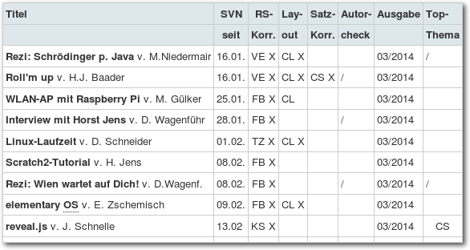Das digitale „Kanban-Board“ von freiesMagazin.
| Buchinformationen | |
| Titel | Kanban in der IT [6] |
| Autor | Klaus Leopold, Siegfried Kaltenecker |
| Verlag | Carl-Hanser-Verlag, 2013 (2. Auflage) |
| Umfang | 290 Seiten |
| ISBN | 978-3-446-43826-2 |
| Preis | 34,99 € (Print), 27,99 € (PDF) |
Links
[1] https://de.wikipedia.org/wiki/Agile_
|
[2] https://de.wikipedia.org/wiki/Kanban_
|
[3] http://files.hanser.de/hanser/docs/20131007_21317163755-41_978-3-446-43826-2_Inhaltsverzeichnis.pdf
[4] https://de.wikipedia.org/wiki/Kontinuierlicher_Verbesserungsprozess
[5] https://de.wikipedia.org/wiki/Kanban_(Softwareentwicklung)#Kaizen
[6] http://www.hanser-fachbuch.de/buch/Kanban+in+der+IT/9783446438262
| Autoreninformation |
| Dominik Wagenführ (Webseite) ist Software-Entwickler von Beruf und in seiner Freizeit Chefredakteur bei freiesMagazin. Die Parallelen, die Kanban in beiden Projekten bietet, haben ihn überrascht. |
Diesen Artikel kommentieren
Zum Index
Rezension: Raspberry Pi programmieren mit Python
von Michael Niedermair Das Buch ist eine Einführung in die Programmierung mit Python auf dem Raspberry Pi für den Einsteiger. Es vermittelt auf der einen Seite die Grundlagen von Python (mit fortgeschrittenen Techniken wie OOP, Internetprogrammierung, …) und auf der anderen Seite in kleinen Projekten, wie man die Hardware des Raspberry entsprechend nutzt und anspricht. Der Autor Michael Weigend ist Autor von mehreren Büchern, u. a. von Python 3 - Lernen und professionell anwenden, welches inzwischen schon in der 5. Auflage erschienen ist. Redaktioneller Hinweis: Wir danken dem mitp-Verlag für die Bereitstellung eines Rezensionsexemplares.Was steht drin?
Das Buch ist in insgesamt elf Kapitel mit Einleitung, Anhang und Stichwortverzeichnis unterteilt. Viele Kapitel vertiefen das erlernte Wissen mit diversen Projekten. Jedes Kapitel wird dabei mit Aufgaben abgeschlossen, gefolgt von den Lösungen mit entsprechender Beschreibung. Das erste Kapitel (33 Seiten) führt in Python ein. Die Themen sind dabei IDLE, die Python-Shell, Namen und Zuweisungen, gefolgt von Befehlen, um die Hardware zu steuern (z. B. LED ein-/ausschalten). Wie man Python-Skripte schreibt und ausführt, zeigt das zweite Kapitel (36 Seiten). Dabei werden die Programmiergrundlagen und Strukturen (Verzweigungen, Schleifen, …) erläutert. Diese werden am Projekt GPIO und der Alarmanlage vertieft. Das dritte Kapitel (44 Seiten) beschreibt die diversen „Datentöpfe“ Mengen, Listen, Tupeln und Dictionaries. Im vierten Kapitel (35 Seiten) wird das Thema Funktionen behandelt. Vom Aufruf, der Definition über die Parameterübergabe und den Rückgabewert wird alles erläutert. Rekursion wird hier unter anderem an Quicksort und der Turtle-Grafik gezeigt. Das fünfte Kapitel (35 Seiten) zeigt, wie man grafische Oberflächen auf dem Raspi erstellt. Im sechsten Kapitel (36 Seiten) zeigt der Autor, wie man u. a. am Beispiel „Karteikasten“ Daten findet, lädt und wieder speichert. Ergänzt wird das Kapitel mit Regulären Ausdrücken. Das siebte Kapitel (30 Seiten) beschäftigt sich mit Zeitfunktionen, wie zum Beispiel dem Stoppen der Zeit, dem Ermitteln der aktuellen Zeit und ähnlichem. Der digitale Bilderrahmen und die Digitaluhr werden dabei mit dem zuvor erlernten Wissen erstellt. OOP-Klassen, Vererbung und Co bilden das achte Kapitel (40 Seiten). Im neunten Kapitel (37 Seiten) wird gezeigt, wie man Sensoren mit dem Raspi abfragt (Temperatur, Spannung, …). Das zehnte Kapitel (30 Seiten) widmet sich der Kamera, die an den Raspi angeschlossen werden kann und klärt die Fragen: Wie schließt man das Kameramodul an? Wie wird die Kamerasoftware installiert? Wie erfasst man Bewegungen und so weiter. Das elfte Kapitel (40 Seiten) macht aus dem Raspi einen Webserver mit vielen Funktionen (WLAN-Anbindung, Webserver, SSH, Webcam mit statischer Webseite, CGI-Skripte, …). Der Anhang (20 Seiten) zeigt, wie man den Raspi einrichtet und konfiguriert und wie man die GPIOs mit dem Breakout-Board über Flachbandkabel verbindet. Am Ende folgt das Stichwortverzeichnis mit insgesamt sechs Seiten.Wie liest es sich?
Das Buch ist für den absoluten Anfänger geschrieben. Bastler sollte man aber sein, wenn es an die Hardware geht. Es setzt keine Python-Kenntnisse voraus und richtet sich an den Einsteiger. Die einzelnen Kapitel lassen sich sehr gut lesen, bei Bedarf unterstützen kleine Grafiken den theoretischen Inhalt. Die Codeschnipsel sind meist sehr klein, sehr gut dokumentiert und man versteht diese ohne Probleme. Diverse kleine Projekte, bei denen man teilweise auch Basteln muss, zeigen, wie man das erlernte Wissen direkt anwenden und somit vertiefen kann. Jedes Kapitel wird mit Aufgaben und Übungen abgeschlossen, sodass man selbst feststellen kann, ob man den Inhalt des Kapitels verstanden hat. Die dazugehörige Lösung ist dabei gut beschrieben. Kennt man sich mit dem Inhalt eines Kapitels schon aus, kann man dieses ohne Probleme überspringen und mit dem nächsten Kapitel weiter machen.Kritik
Das Buch ist für den Python- und Raspi-Anfänger geschrieben und für diesen sehr gut geeignet. Es setzt keine Programmierkenntnisse voraus und führt hier gut in die Thematik ein. Der Quelltext (bzw. die Codeschnipsel) wird durch viele Kommentare erklärt, sodass meist keine Fragen mehr offen bleiben. Man merkt deutlich, dass der Autor schon jahrelang Erfahrung in Python und der Wissensvermittlung hat. Einziger Schatten bei den Beispielen ist, dass hier unterschiedliche Python-Versionen (2.7, 3.0, 3.2) verwendet werden. Dies sollte einheitlich sein, um den Anfänger nicht zu verwirren. Die netten Bastelprojekte verlangen etwas handwerkliches Geschick (zum Beispiel Taster aus einer Wäscheklammer), sollten aber von jedem nachzubauen sein. Das Stichwortverzeichnis ist gemessen am Buchumfang gut und man findet die entsprechenden Stellen schnell, da meist nur eine bzw. zwei Stellen angegeben sind. Das Buch hat ein Softcover und lässt sich bei den knapp 450 Seiten auch gut am Tisch aufklappen, ohne dass man fürchten muss, Blätter zu verlieren. Das Preis-Leistungsverhältnis (Buch, Umfang und Preis) ist gut und wirkt nicht überteuert. Gesamt betrachtet muss man das Buch als sehr gut für den Einstieg in Python und in die Arbeit mit dem Rasperry Pi bewerten. Es dient als gute Grundlage, um nach dem Durcharbeiten eigene Projekte umzusetzen, wobei hier dann noch weitere Literatur beziehungsweise Tutorials notwendig sind.| Buchinformationen | |
| Titel | Raspberry Pi programmieren mit Python [1] |
| Autor | Michael Weigend |
| Verlag | mitp-Verlag, 2014 (1. Auflage) |
| Umfang | 444 Seiten |
| ISBN | 978-3-8266-9474-5 |
| Preis | 29,99 € (Print), 25,99 € (E-Book) |
Links
[1] http://www.it-fachportal.de/shop/buch/Raspberry Pi programmieren mit Python/detail.html,b188470
| Autoreninformation |
| Michael Niedermair ist Lehrer an der Münchener IT-Schule, ist Koordinator für den Bereich Programmierung und Anwendungsentwicklung und „spielt“ gerne mit den Raspi, meist aber mit Java und seltener mit Python. |
Diesen Artikel kommentieren
Zum Index
Leserbriefe
Für Leserbriefe steht unsere E-MailadresseLeserbriefe und Anmerkungen
EPUB-Version
-> Könnt Ihr mir bitte sagen, womit Ihr die schönen EPUBs macht?Henry <- Dies haben wir in freiesMagazin 11/2012 erklärt: „E-Book-Erstellung aus LaTeX und HTML“ [1]
Dominik Wagenführ -> Von der Idee, die Artikel als Epub-Download anzubieten, bin ich wahnsinnig begeistert. Ich selbst habe mir so einen E-Book-Reader zugelegt und lese nun alle Artikel im Bus auf dem Weg zur Arbeit über dieses Gerät. Anbei hätte ich noch eine Frage bezüglich den Artikeln im Archiv – genauer gesagt handelt es sich um die Magazin-Ausgaben von 2006 bis 2011. Gerne würde ich diese als EPUB-Datei auf meinen E-Book-Reader laden, um auch die älteren Artikel nochmals lesen und vor allem verschiedene Tutorials nochmals Durchstöbern zu können. Wäre es möglich, auch die alten Magazin-Artikel als EPUB-Download anbieten zu können?
Markus Kaupp <- Die alten Ausgabe als EPUB anzubieten, wäre ein sehr hoher Aufwand. Sie finden den Vorgang in freiesMagazin 11/2012 [1]. Wir müssten viel Arbeit in die Aufbereitung des Quellcodes stecken, ehe wir ein EPUB erhalten. Demzufolge ist es auch nicht ohne Weiteres möglich, die alten Ausgaben in EPUBs zu wandeln, weil wir hierfür sehr viel am Altcode ändern müssten. Die Ausgaben vor 01/2008 liegen nur als PDF vor. Diese können natürlich auf einem E-Book-Reader angeschaut werden. Aber eine gute (!) Konvertierung in ein EPUB ist schwer bis unmöglich. Für die Ausgaben ab 01/2008 kann man mithilfe von Calibre selbst aus den bestehenden HTML-Seiten ein EPUB erzeugen. Die Konvertierung kann beispielhaft so erfolgen:
$ cd /tmp/
$ wget -p http://www.freiesmagazin.de/mobil/freiesMagazin-2008-04-bilder.html
$ ebook-convert www.freiesmagazin.de/mobil/freiesMagazin-2014-01-bilder.html freiesMagazin-2014-01-bilder.epup
Danach findet man das EPUB unter /tmp/freiesMagazin-2014-01-bilder.epub und
kann es auf seinen Reader übertragen.
Die Bildgrößen stimmen ggf. nicht ganz und die Überschriften und
Umbrüche sind nicht ganz korrekt, aber es reicht zum Lesen.
Der Allgemeinheit bieten wir das derzeit nicht an, weil diese einfache Konvertierung
nicht unseren Qualitätsstandards entsprechen würde. Gegebenenfalls werden wir diese Umstellung aber doch noch vornehmen und zumindest die alten HTML-Ausgaben konvertieren.
$ wget -p http://www.freiesmagazin.de/mobil/freiesMagazin-2008-04-bilder.html
$ ebook-convert www.freiesmagazin.de/mobil/freiesMagazin-2014-01-bilder.html freiesMagazin-2014-01-bilder.epup
Dominik Wagenführ
Alternative zu Irfanview
-> In einem der Leserbriefe zur Februarausgabe wird nach einer Alternative für Irfanview gefragt. Ich teste seit einiger Zeit XnViewMP [2]. Zurzeit befindet sich das Ganze noch in der Beta-Phase, läuft aber sehr stabil. Ich hatte bisher keine Probleme (Kubuntu 12.04 LTS 32 Bit, SolydK 64 Bit). Wen es nicht stört, dass es sich „nur” um Freeware und nicht um Open Souce handelt, der hat sicherlich seine Freude mit XnViewMP. Zum Download stehen 32- und 64-Bit für Linux, MacOS X und Windows bereit.Lee -> Das Programm XnView gibt es auch als Linux-Version [2]. Eventuell muss man aber Anpassungen in der glib durchführen. Weitere Alternativen sind F-Spot [3] und Shotwell [4] oder Programme für den Framebuffer für die Shell.
Matthias Kühmstedt
Pinguine haben kurze Beine – Die Laufzeiten der Linuxdistributionen
-> Ich wäre auch nicht begeistert, wenn mein Betriebssystem sich nicht mehr aktualisieren lässt oder ich eine Freischaltung brauche, wie bei Windows die Daueraktivschaltung. Dann kann man ja gleich per Live-DVD den PC starten. Und das ohne persönliche Einstellungen!Ralf-Dieter (Kommentar) -> […] Schauen Sie sich mal ArchLinux [5] an. Dieses „Rolling Release“ [6] hat keine begrenzte Haltbarkeit. ;-)
Dino Conte (Kommentar) -> Diese kurzen Laufzeiten sind meiner Ansicht nach zusammen mit den fehlenden bzw. „nicht empfohlenen“ Upgrade-Möglichkeiten auf die nächste Version eines der Hauptprobleme, dass Linux sich nicht stärker im Markt etablieren kann. Davon abgesehen fehlt in dem Artikel leider der Hinweis auf die „Rolling Releases“, die eben keine Neuinstallation notwendig machen und somit „eigentlich“ ewig zu nutzen wären, z. B. Arch Linux [5] oder Manjaro [7].
JuergenK (Kommentar) -> Der Artikel geht leider mit keinem Wort auf Rolling-Release-Distributionen ein. Das ist schade. Mein Arch Linux läuft hier seit circa 10 Jahren immer noch von der selben Installation und hat schon zwei Systeme überlebt. Und da im Geschäftsumfeld der Anwender selten auch gleich der Administrator ist, erübrigt sich auch das Argument des vermeintlich „schweren“ Einrichtens auch gleich. :)
Dirk (Kommentar) -> Sehr schöner Artikel. Vergleicht sehr gut und macht mir Lust, auch mal CentOS zu testen. Zwar stehe ich mit Debian schon recht langfristig da, aber es stört ja nicht mal über den Tellerrand zu schauen. Interessant wäre noch ein Vergleich/die Erwähnung von Rolling-Release-Distributionen wie Gentoo gewesen.
txt.file (Kommentar) <- Stimmt durchaus, [bei Rolling-Release-Distributionen] besteht keine begrenzte Haltbarkeit. Es bedeutet im Gegenzug aber auch, dass man sein System quasi permanent neu aufsetzt. Das will man ja gerade nicht. Wo es auf die Verlässlichkeit des Systems ankommt, wo man vor bösen Überraschungen sicher sein möchte, kommt dieses Distributionsmodell eher nicht infrage. Der Artikel richtete sich [daher auch] an eine andere Zielgruppe, der mit einer sich stetig auf dem neuesten Stand haltenden Distribution nicht gedient wäre.
Daniel Schneider -> In dem Artikel ist die Rede davon, dass nach Ablauf des Lebenszykluses eine Neuinstallation nötig sei. Bei vielen der genannten Distributionen ist […] ein Update auf die neue Version […] problemlos möglich.
Kim N. (Kommentar) <- Ein Update bzw. Distributionsupgrade, um genau zu sein, ist zwar möglich, aber nicht immer problemlos. Allein der Sprung bei einer Ubuntu-LTS-Version zur nächsten ist so gewaltig, dass es nicht auszuschließen ist, dass dies Probleme macht, wenn sich z. B. Config-Dateien ändern etc. Eine Neuinstallation ist da der sauberere Weg, den viele nutzen.
Dominik Wagenführ -> Den Artikel „Pinguine haben kurze Beine – Die Laufzeiten der Linuxdistributionen“ von Daniel Schneider fand ich interessant. Leider wurde nur auf den offiziellen Support geschaut, eine Betrachtung des Themenkomplex Korrekturen und Aktualisierungen fehlt mir allerdings. Am Anfang verweist der Autor auf den langen Support von Windows. Eine Zeitangabe wäre schön gewesen, daher liefere ich diese nach:
- Der Verkaufstart von Windows 95 war der 24. August 1995, der Support ging bis 31. Dezember 2001, knapp 6,5 Jahre [8]
- Windows 98: Frühling 1998 bis 11. Juli 2006, gut 8 Jahre [9]
- Windows 98 SE: 5. Mai 1999 bis 11. Juli 2006, gut 7 Jahre [9]
- Windows ME: 14. September 2000 bis 11. Juli 2006, knapp 6 Jahre [10]
- Windows XP: Windows XP ist meiner Ansicht nach nicht eine Version sondern
eine Versionsreihe, die ein kostenloses Update mit Service-Packs ermöglichte
(ähnlich die Möglichkeit, ein Linux-System zu aktualisieren).
Dies ist die Darstellung auf
Wikipedia [11] und entspricht auch meiner
Erfahrung. Gerade der Service Pack 2 enthielt neue Elemente (zum Beispiel eine
Firewall), also war er keine reine Fehlerkorrektur. Außerdem verlangen spätere
Programme häufig mindestens den Service Pack 2 und lassen sich nicht auf einem
Windows XP von 2001 installieren. Die einzelnen Supportzeiten waren damit:
- RTM 4 Jahre
- Service Pack 1 4 Jahre
- Service Pack 2 6 Jahre
- Service Pack 3 6 Jahre
- Windows Vista: 30. Januar 2007 bis 11. April 2017, gut 10 Jahre [12]. Mit Windows Vista habe ich keine eigene Erfahrungen, die Service Packs sehen aber auch so aus, dass sie nicht nur reine Fehlerkorrekturen sind sondern auch neue Funktionen bereitstellen. Daher ist für den Vergleich eventuell der Support immer nur bis zu den Service Packs zu betrachten, wenn diese neue Elemente mit einbauen. Dafür spricht auch, dass der Service Pack 2 den Service Pack 1 voraussetzt und der Platform Updater, der eine Entwicklung für beide Versionen Windows 7 und Windows Vista ermöglicht den Service Pack 2 voraussetzt. Damit wäre der Support von RTM bis Service Pack 1 gut 1 Jahr und von Service Pack 1 bis Service Pack 2 auch gut 1 Jahr.
- Windows 7: 22. Oktober 2009 bis Anfang 2020, 10,5 Jahre. Auch für Windows 7 ist wieder zu schauen, wie weit die Service Packs als reine Fehlerkorrektur oder als neue Version zu interpretieren sind [13].
Diether Knof <- Im Prinzip haben Sie Recht, wobei ich den wichtigen Unterschied nur zwischen dem, was aktualisiert wird, ziehen würde. Das heißt Basissystem vs. Anwendungen. Die Aktualisierung über das Windows-Update selbst würde ich mit einem „apt-get upgrade“ vergleichen, wobei eben nur das Basissystem aktualisiert wird, nicht die Anwendungen. Und da gibt es bei der Supportdauer eben doch den angesprochenen Unterschied, d. h. bei Windows XP 12,5 Jahre. Als Benutzer muss ich bei Windows immer nur den Update-Knopf klicken und bekomme alles, was ich brauche. Unter Linux bekomme ich das gleiche, aber eben nicht so lange. Ein dist-upgrade ist etwas anderes, da dann wesentlich mehr ausgetauscht wird und sich komplette Hauptversion anpassen, was wieder Gefahren birgt.
Dominik Wagenführ Links
[1] http://www.freiesmagazin.de/freiesMagazin-2012-11
[2] http://www.xnview.com/de/xnviewmp/
[3] http://f-spot.org/
[4] https://wiki.gnome.org/Apps/Shotwell
[5] https://www.archlinux.org/
[6] https://de.wikipedia.org/wiki/Rolling_Release
[7] https://manjaro.org/
[8] https://de.wikipedia.org/wiki/Microsoft_Windows_95
[9] https://de.wikipedia.org/wiki/Microsoft_Windows_98
[10] https://de.wikipedia.org/wiki/Microsoft_Windows_Millennium_Edition
[11] https://de.wikipedia.org/wiki/Microsoft_Windows_XP#Aktualisierungen_von_Windows_ XP_Home_und_Professional_f.C3.BCr_x86-Prozessoren
[12] https://de.wikipedia.org/wiki/Microsoft_Windows_Vista
[13] https://de.wikipedia.org/wiki/Microsoft_Windows_7
Die Redaktion behält sich vor, Leserbriefe gegebenenfalls zu kürzen. Redaktionelle Ergänzungen finden sich in eckigen Klammern. Die Leserbriefe kommentieren
Zum Index
Veranstaltungskalender
| Messen | ||||
| Veranstaltung | Ort | Datum | Eintritt | Link |
| UnFUCK | Furtwangen | 11.04.–13.04.2014 | frei | http://www.unfuck.eu/ |
| Easterhegg | Stuttgart | 18.04.–21.04.2014 | 42 EUR | https://eh14.easterhegg.eu/ |
| Bug Squashing Party | Salzburg | 25.04.–27.04.2014 | frei | https://wiki.debian.org/BSP/2014/04/at/Salzburg |
| Linux Audio Conference | Karlsruhe | 01.05.–03.05.2014 | frei | http://lac.linuxaudio.org/2014/ |
| Linuxwochen Wien | Wien | 08.05.–10.05.2014 | frei | http://linuxwochen.at/ |
| LinuxTag | Berlin | 08.05.–10.05.2014 | – | http://www.linuxtag.org/ |
| droidcon | Berlin | 08.05.–10.05.2014 | – | http://de.droidcon.com/ |
| openQRM Community Summit | Berlin | 20.05.2014 | frei | http://www.openqrm-enterprise.com/ |
| Linuxwochen Eisenstadt | Eisenstadt | 23.05.–24.05.2014 | frei | http://linuxwochen.at/ |
Vorschau
freiesMagazin erscheint am ersten Sonntag eines Monats. Die Mai-Ausgabe wird voraussichtlich am 4. Mai u. a. mit folgenden Themen veröffentlicht:- Multimedia- und Liedprojektion mit OpenLP
- Review: Papers, Please
Konventionen
An einigen Stellen benutzen wir Sonderzeichen mit einer bestimmten Bedeutung. Diese sind hier zusammengefasst:| $: | Shell-Prompt |
| #: | Prompt einer Root-Shell – Ubuntu-Nutzer können hier auch einfach in einer normalen Shell ein sudo vor die Befehle setzen. |
| ~: | Abkürzung für das eigene Benutzerverzeichnis /home/BENUTZERNAME |
Impressum ISSN 1867-7991
freiesMagazin erscheint als PDF, EPUB und HTML einmal monatlich.Erscheinungsdatum: 6. April 2014
| Kontakt | |
| Postanschrift | freiesMagazin |
| c/o Dominik Wagenführ | |
| Beethovenstr. 9/1 | |
| 71277 Rutesheim | |
| Webpräsenz | http://www.freiesmagazin.de/ |
| Autoren dieser Ausgabe | |
| Jens Dörpinghaus | Ein Blick auf Octave 3.8 |
| Dominik Honnef | Rezension: Linux-Kommandoreferenz |
| Horst Jens | PyLadies Vienna – Interview mit Floor Drees |
| Mathias Menzer | Der März im Kernelrückblick |
| Michael Niedermair | Rezension: Raspberry Pi programmieren mit Python |
| Steffen Rumberger | Ein Einstieg in LIRC mit inputlirc |
| Bodo P. Schmitz | Kurztipp: Heimcontainer oder Datentresor ohne TrueCrypt |
| Jochen Schnelle | Neues von Redis |
| Maria Seliger | Äquivalente Windows-Programme unter Linux – Teil 5: Internet-Programme (1) |
| Detlef Steuer | Hidden in Plain Sight: Netzlaufwerke ausspähsicher nutzen |
| Dominik Wagenführ | Im Test: PocketBook Touch 622, Rezension: Kanban in der IT |
| Redaktion | |
| Christian Schnell | Matthias Sitte |
| Dominik Wagenführ (Verantwortlicher Redakteur) | |
| Satz und Layout | |
| Jonas Dabelow | Dominik Frey |
| Moritz Kiefer | Christoph Lehmann |
| Korrektur | |
| Daniel Braun | Frank Brungräber |
| Vicki Ebeling | Stefan Fangmeier |
| Mathias Menzer | Christian Schnell |
| Karsten Schuldt | Toni Zimmer |
| Veranstaltungen | |
| Ronny Fischer | |
| Logo-Design | |
| Arne Weinberg (CC-BY-SA 4.0 Unported) |
Soweit nicht anders angegeben, stehen alle Artikel, Beiträge und Bilder in freiesMagazin unter der Creative-Commons-Lizenz CC-BY-SA 4.0 International. Das Copyright liegt beim jeweiligen Autor. freiesMagazin unterliegt als Gesamtwerk ebenso der Creative-Commons-Lizenz CC-BY-SA 3.0 Unported mit Ausnahme der Inhalte, die unter einer anderen Lizenz hierin veröffentlicht werden. Das Copyright liegt bei Dominik Wagenführ. Es wird erlaubt, das Werk/die Werke unter den Bestimmungen der Creative-Commons-Lizenz zu kopieren, zu verteilen und/oder zu modifizieren. Die xkcd-Comics stehen separat unter der Creative-Commons-Lizenz CC-BY-NC 2.5 Generic. Das Copyright liegt bei Randall Munroe.
Zum Index
File translated from TEX by TTH, version 3.89.
On 4 May 2014, 11:00.